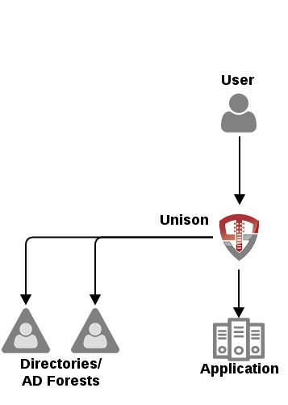
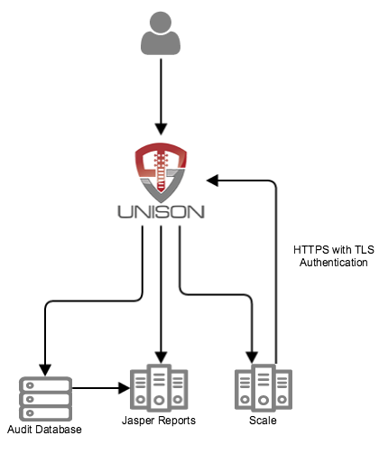
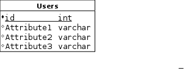
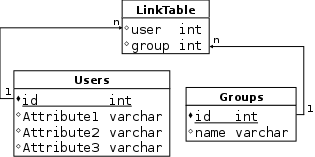
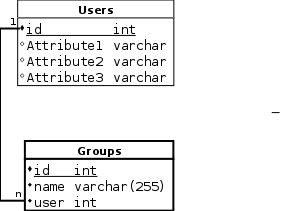

Copyright 2015, Tremolo Security, Inc.
Introduction
OpenUnison combines identity services that are most used by applications into a single system:
-
Authentication
-
Session Management
-
Identity Federation
-
User Provisioning
-
Access Request Management
These services are provided by a J2EE application that can be deployed into any servlet container.
Web Access Manager
When deployed for web access management, OpenUnison is a reverse proxy, sitting between your users and your web applications.

When a user attempts to access your web application, they’ll always go through OpenUnison:
-
User requests your application
-
OpenUnison checks to see if the URL is protected
-
If the URL is protected, OpenUnison will check to see if your are authenticated
-
If you are authenticated, check if authentication level is valid
-
If you aren’t authenticated, or your authentication level isn’t valid execute the authentication chain
-
-
OpenUnison checks if you are authorized
-
If authorized, OpenUnison can execute a series of filters to manipulate the request or response
-
OpenUnison generates a Last Mile token that contains the user’s attributes, nonce, time range and the request URI
-
The request is sent your application
-
The application, deployed with a Last Mile component, validates the Last Mile token and sets the user’s context
The reverse proxy model offers several advantages over a typical agent model:
-
Performance - Agents need to "phone home" to verify access
-
Ease of development - Develoeprs can write applications "in a vacuum" and integrate later
-
Ease of deployment - Last Mile components are lighter then typical agents
-
Just-In-Time Provisioning - Create accounts in applications before they login
User Provisioning System
In addition to web access management, OpenUnison provides a user provisioning system that can be used to build a private IDentity as a Service solution. The APIs provided by OpenUnison can be used directly by applications or in conjunction with Tremolo Security Scale to provide an interface for user registration, requesting access to resources and approving access via workflows. The data is recorded in an audit database that allows for reporting on who requested access to what and who approved the access.

LDAP Virtual Directory
OpenUnison integrates MyVirtualDirectory as an internal LDAP Virtual Directory. The provisioning services provide a limited search capability, but there’s no LDAP interface provided. The configurations used to power the embedded MyVirtualDirectory can be used in a stand alone MyVirtualDirectory server.
Deploying OpenUnison
OpenUnison is packaged as a Maven web application that can be customized using Maven’s overlay plugin. This makes integration into any DevOps platform very easy, as out of the box there are only 3 files that need to be created:
-
unison.xml - The main OpenUnison configuration file
-
unisonKeyStore.jks - The key store for OpenUnison
-
myvd.conf - The MyVirtualDirectory configuration file
The is section details how to create these files and deploy them, but not their individual configurations. The Configuration Reference section details how to configure OpenUnison.
Deploy Reverse Proxy
Create a Maven Project
As stated above, OpenUnison is most easily deployed using a Maven project. The first step is to create a simple web application project:
$ mvn archetype:generate -DgroupId=com.mycompany.openunison -DartifactId=openunison -DinteractiveMode=false -DarchetypeArtifactId=maven-archetype-webapp $ rm openunison/src/main/webapp/index.jsp $ rm openunison/src/main/webapp/WEB-INF/web.xml
Once the project is created, add the Tremolo Security repository, dependencies and overlay plugin:
<repositories>
<repository>
<id>Tremolo Security</id>
<url>https://www.tremolosecurity.com/nexus/content/repositories/releases/</url>
</repository>
</repositories>
<dependencies> <dependency> <groupId>com.tremolosecurity.unison</groupId> <artifactId>open-unison-webapp</artifactId> <version>1.0.6</version> <type>war</type> <scope>runtime</scope> </dependency> <dependency> <groupId>com.tremolosecurity.unison</groupId> <artifactId>open-unison-webapp</artifactId> <version>1.0.6</version> <type>pom</type> </dependency> </dependencies>
<build>
<plugins>
<plugin>
<artifactId>maven-compiler-plugin</artifactId>
<version>3.1</version>
<configuration>
<source>1.7</source>
<target>1.7</target>
</configuration>
</plugin>
<plugin>
<groupId>org.apache.maven.plugins</groupId>
<artifactId>maven-war-plugin</artifactId>
<version>2.6</version>
<configuration>
<overlays>
<overlay>
<groupId>com.tremolosecurity.unison</groupId>
<artifactId>open-unison-webapp</artifactId>
</overlay>
</overlays>
</configuration>
</plugin>
</plugins>
</build>
If everything is configured correctly, when your run the package artifact with Maven the target directory will contain a war file that contains the OpenUnison files including JSPs and libraries.
Create the Key Store
All certificates and keys are stored in a key store called unisonKeyStore.jks. They key store MUST:
-
Be a Java Extended Key Store (JCEKS)
-
All key passwords must match the key store password
$ keytool -genseckey -alias session-unison -keyalg AES -keysize 256 -storetype JCEKS -keystore src/main/webapp/WEB-INF/unisonKeyStore.jks Enter keystore password: Re-enter new password: Enter key password for <session-unison> (RETURN if same as keystore password):
This command created a secret key, a static AES256 key. This generates the key store as well. The key that we generated will be used for the session we create.
Virtual Directory Configuration
OpenUnison uses an embedded version of MyVirtualDirectory to work with user data. This allows OpenUnison to work with LDAP directories, databases, Active Directory, web services, etc. It also provides a powerful mechanism for manipulating identity data. For instance you can add attributes to an Active Directory forest without changing the schema. There are two roots that should be used:
-
ou=Tremolo - This is where OpenUnison will look for identity data
-
ou=Data - This is where directories may be configured that OpenUnison won’t look for identity data
The ou=Data root is useful for configuring joins where the directories being joined are configured under ou=Data and the joiner is configured under ou=Tremolo. Create a text file called src/main/webapp/WEB-INF/myvd.conf/myvd.props with the following content:
#Global AuthMechConfig server.globalChain= server.nameSpaces=rootdse,myvdroot server.rootdse.chain=dse server.rootdse.nameSpace= server.rootdse.weight=0 server.rootdse.dse.className=net.sourceforge.myvd.inserts.RootDSE server.rootdse.dse.config.namingContexts=o=Tremolo server.myvdroot.chain=root server.myvdroot.nameSpace=o=Tremolo server.myvdroot.weight=0 server.myvdroot.root.className=net.sourceforge.myvd.inserts.RootObject
See MyVirtualDirectory’s website (http://myvd.sourceforge.net/) for information on how to configure MyVirtualDirectory.
Create the OpenUnison XML File
OpenUnison’s unison.xml file drives most of the configuration options. This file is based on an annotated XML Schema file. While not required, its recommended that the schema file be used when creating the unison.xml file. If using an editor such as Eclipse the schema file will make it much easier to navigate the configuration options. The easiest way to get this file is to copy it from the build i
$ cp target/war/work/com.tremolosecurity.unison/open-unison-webapp/WEB-INF/tremoloConfig.xsd src/main/webapp/WEB-INF/
Once the file is copied, you can create src/main/webapp/WEB-INF/unison.xml file from the schema file. At a minimum you must set the myvdConfig, keyStorePath and keyStorePassword elements:
<?xml version="1.0" encoding="UTF-8"?> <tremoloConfig xmlns="http://www.tremolosecurity.com/tremoloConfig" xmlns:xsi="http://www.w3.org/2001/XMLSchema-instance" xsi:schemaLocation="http://www.tremolosecurity.com/tremoloConfig tremoloConfig.xsd "> <applications/> <myvdConfig>WEB-INF/myvd.conf</myvdConfig> <authMechs/> <authChains/> <resultGroups/> <keyStorePath>WEB-INF/unisonKeyStore.jks</keyStorePath> <keyStorePassword>password</keyStorePassword> </tremoloConfig>
Port Configurations
OpenUnison can translate between internal and external ports. An internal port is usually going to be 8080 and 8443 since Tomcat doesn’t generally run on a privileged port. An external port is usually 80 and 443. This is useful if you are using iptables rules for port forwarding or a load balancer. Finally, you can tell OpenUnison to redirect all unsecure requests to a secure port. Create a file called src/main/webapp/WEB-INF/unisonService.props.
com.tremolosecurity.openunison.forceToSSL=true com.tremolosecurity.openunison.openPort=8080 com.tremolosecurity.openunison.securePort=8443 com.tremolosecurity.openunison.externalOpenPort=80 com.tremolosecurity.openunison.externalSecurePort=443 #Uncomment and set for production deployments #com.tremolosecurity.openunison.activemqdir=/var/lib/unison-activemw
Create Context Parameters
The next step is to tell OpenUnison where to find the configuration files. For Tomcat, this is added to META-INF/context.xml:
<Context> <Environment name="unisonConfigPath" value="WEB-INF/unison.xml" type="java.lang.String"/> <Environment name="unisonLog4jPath" value="WEB-INF/log4j.xml" type="java.lang.String"/> <Environment name="unisonServiceConfigPath" value="WEB-INF/unisonService.props" type="java.lang.String"/> </Context>
At this point, OpenUnison has a minimum configuration for deployment.
Deploying Outside of the WAR
OpenUnison configuration doesn’t need to be performed inside of the war. Its just one of the most convinient ways to get started. All of the above configuraiton options can be specified outside of war by using the full path to the files. For instance if the unison.xml file will be stored in /etc/unison then set unisonConfigPath to /etc/unison/unison.xml.
Deploy Web Services
Configuring OpenUnison
Reverse Proxy
OpenUnison’s reverse proxy capability is configured around applications and URLs. An application is a logical collection of URLs. Each URL is made up of a sequence of hosts, a collection of filters and potential authorization rules.
Before configuring an application you should know:
-
Whats the URL of the application going to be?
-
What host and port will the application be sitting behind the reverse proxy?
-
Do you want SSO with other applications?
-
How will your users authenticate?
-
How will OpenUnison tell your application who’s logged in?
Once you have the answers to these questions you can begin configuring OpenUnison.
Authentication Mechanisms (authMechs)
Authentication Mechanisms define the ways in which a user can be authenticated. Prior to being added to an authentication chain, a mechanism must be defined in the section. Every authentication method has its own configuration parameters. See the Authentication Mechanisms section of the Configuration Reference for configuration options on specific mechanisms. Here’s an example of the form login mechanism:
<!--The name attribute is what is referenced in the authentication chain --> <mechanism name="loginForm"> <!-- The URI is where the user is sent when its time to authenticate with this mechanism, MUST start with /auth --> <uri>/auth/formLogin</uri> <!-- The class name of the authentication mechanism --> <className>com.tremolosecurity.proxy.auth.FormLoginAuthMech</className> <!-- List of optional initialization parameters for the mechanism --> <init> </init> <!-- Optional list of the parameters that are configured on the chain --> <params> <param>FORMLOGIN_JSP</param> </params> </mechanism>
Once a mechanism is configured, its available to an authentication chain.
Authentication Chains (authChains)
Mechanisms are tied to gether in chains that allow for multiple mechanisms to be executed when a user attempts to authenticate. This way, an application can require multiple mechanisms for authentication. For instance, the user may first login with a username and password, but then be required to accept tearms and conditions. A chain can also be used for multi-factor authentication. Once mechanisms are available, they can be added to a chain. The below XML shows an example chain:
<!-- The name is how this chain is referenced in the URL --> <!-- The level defines how strong an authenticaiton should be --> <!-- The root defines where in the virtual directory OpenUnison should look for users. If not set, OpenUnison will look in o=Tremolo --> <chain name="formlogin" level="20" root="o=Tremolo"> <!-- Each mechanism should be listed in the order that they're to be executed in --> <authMech> <!-- The name attribute of the mechanism --> <name>loginForm</name> <!-- Determines how the mechanism is required. If "required" then the chain can not succeed without this mechanism succeeding. If "optional" then the chain can succeed if this mechanism fails --> <required>required</required> <!-- List of optional parameters for the mechanism while executing the chain. For specific mechanisms, see the Authentication Mechanisms section of --> <params> <param name="FORMLOGIN_JSP" value="/auth/forms/defaultForm.jsp"/> </params> </authMech> </chain>
Authentication Levels
Each chain has an authentication level. This level is used to determine how "strong" the authentication is. If a URL is configured with a chain of a certain level, OpenUnison will respond in one of two ways:
-
If the level of the chain on the URL is HIGHER then the level the user is currently authenticated to then the user will be forced to authenticate with the chain configured on the URL
-
If the level of the chain on the URL is EQUAL to or LESS then the level the user is currently authenticated to then the user will NOT be forced to re-authenticate
This allows you to mix and match authentication types depending on the user base. For instance US Federal Government workers have PIV cards, but private industry might have a TOTP credential. By using authentication levels you can ensure they have access to the same resources. A best practice is to assign levels in alignment with NIST 800-63 but in 10s instead of 1s:
-
0 - Anonymous
-
10 - No level of assurance
-
20 - Some level of assurance
-
30 - Medium level of assurance
-
40 - High level of assurance
This way you can differentiate between different types of authentication in the same category providing some additional room for customization.
Result Groups (resultGroups)
A result group is a collection of results that could occur because of an event. There are four types of events -
-
Authentication Success
-
Authentication Failure
-
Authorization Success
-
Authorization Failure
A result can be one of three actions:
-
Create a header
-
Create a cookie
-
Send a redirect
Finally, a result’s value may come from one of three sources:
-
A user attribute
-
A static value
-
A custom class (com.tremolosecurity.proxy.results.CustomResult)
The below is an example of a result group configuration:
<!-- The name attribute is how the resultGroup is referenced in the URL --> <resultGroup name="OnAzSuccess"> <!-- Each result should be listed --> <result> <!-- The type of result, one of cookie, header or redirect --> <type>cookie</type> <!-- The source of the result value, one of user, static, custom --> <source>static</source> <!-- Name of the resuler (in this case a cookie) and the value --> <value>urlSuccessCookie=true</value> </result> <result> <type>header</type> <source>user</source> <value>result-uid=uid</value> </result> <result> <type>cookie</type> <source>user</source> <value>result-cookie=uid</value> </result> <result> <type>header</type> <source>custom</source> <value>mycustomheader=com.company.className</value> </result> </resultGroup>
Applications (applications)
Once your authentication mechanisms, chains and result groups are configured, you can configure your application. Each application is broken into:
-
URLs
-
Cookie Configuration
Each URL comprises the components you’d expect from a URL such as host, path and transformations. The cookie configuration defines how an application’s session is managed. Below is an example application configuration:
<application name="AzCheck">
<urls>
<!-- The regex attribute defines if the proxyTo tag should be interpreted with a regex or not -->
<!-- The authChain attribute should be the name of an authChain -->
<url regex="false" authChain="formlogin">
<!-- Any number of host tags may be specified to allow for an application to work on multiple hosts. Additionally an asterick (*) can be specified to make this URL available for ALL hosts -->
<host>localhost.localdomain</host>
<!-- The filterChain allows for transformations of the request such as manipulating attributes and injecting headers -->
<filterChain>
<!-- The last mile filter the most secure mechanism OpenUnison has to integrate with a down stream application. See the Configuration Reference for all of the filters available with OpenUnison. NOTE: any param listed multiple times will be interpreted as a multi-value attribute -->
<filter class="com.tremolosecurity.proxy.filters.LastMile">
<param name="sigKeyAlias" value="lastmile"/>
<param name="encKeyAlias" value="lastmile"/>
<param name="sigKeyPass" value="start123"/>
<param name="encKeyPass" value="start123"/>
<param name="timeScew" value="60"/>
<param name="headerName" value="autoidmrequest" />
<param name="attribs" value="uid=from-assertion-uid"/>
<param name="attribs" value="sn=from-assertion-sn"/>
<param name="attribs" value="cn=from-assertion-cn"/>
</filter>
</filterChain>
<!-- The URI (aka path) of this URL -->
<uri>/echo2/echo</uri>
<!-- Tells OpenUnison how to reach the downstream application. The ${} lets you set any request variable into the URI, but most of the time ${fullURI} is sufficient -->
<proxyTo>http://ubuntu14.tremolo.lan${fullURI}</proxyTo>
<!-- List the various results that should happen -->
<results>
<azSuccess>AzSuccessHeader</azSuccess>
</results>
<!-- Determine if the currently logged in user may access the resource. If ANY rule succeeds, the authorization succeeds.
The scope may be one of group, dn, filter, dynamicGroup or custom
The constraint identifies what needs to be satisfied for the authorization to pass and is dependent on the scope:
* group - The DN of the group in OpenUnison's virtual directory (must be an instance of groupOfUniqueNames)
* dn - The base DN of the user or users in OpenUnison's virtual directory
* dynamicGroup - The DN of the dynamic group in OpenUnison's virtual directory (must be an instance of groupOfUrls)
* custom - An implementation of com.tremolosecurity.proxy.az.CustomAuthorization -->
<azRules>
<rule scope="group" constraint="cn=staticgroup,ou=internal,ou=GenericLDAP,o=Tremolo" />
</azRules>
</url>
</urls>
<!-- The cookie configuration determines how sessions are managed for this application -->
<cookieConfig>
<!-- The name of the session cookie for this application. Applications that want SSO between them should have the same cookie name -->
<sessionCookieName>autoIdmSession</sessionCookieName>
<!-- The domain of component of the cookie -->
<domain>localhost.localdomain</domain>
<!-- The URL that OpenUnison will interpret as the URL to end the session -->
<logoutURI>/echo/logoff</logoutURI>
<!-- The name of the AES-256 key in the keystore to use to encrypt this session -->
<keyAlias>sessionKey</keyAlias>
<!-- If set to true, the cookie's secure flag is set to true and the browser will only send this cookie over https connections -->
<secure>false</secure>
<!-- The number of secconds that the session should be allowed to be idle before no longer being valid -->
<timeout>0</timeout>
</cookieConfig>
</application>
Identity Providers
OpenUnison can act as an identity provider in addition to a reverse proxy. When an application is an identity provider, it has some minor differences with the reverse proxy:
-
The application can have only one URL that starts with /auth/idp/
-
URLs have additional configuration points:
-
Attribute mappings
-
Trusts
-
Attribute mappings are used to determine which (if any) attributes will be included in the assertion. Trusts are used to establish the connection between the identity provider and the service provider / relying party. Below is an example configuration:
<!-- Setting isApp to false indicates to OpenUnison this is an identity provider, not a proxied application -->
<application name="MyIdP" isApp="false">
<!-- on a single URL is allowed on an identity provider -->
<urls>
<!-- The regex and authChain attributes are ignored -->
<url regex="false">
<!-- Any number of host tags may be specified to allow for an application to work on multiple hosts. Additionally an asterick (*) can be specified to make this URL available for ALL hosts -->
<host>unison.enterprise.com</host>
<!-- The filterChain on an IdP is typically used to add attributes to the user prior to mapping into the assertion -->
<filterChain/>
<!-- The URI MUST start with /auth/idp/ -->
<uri>/auth/idp/MyIdP</uri>
<!-- List the various results that should happen -->
<results>
<auSuccess></auSuccess>
<auFail>Default Login Failure</auFail>
<azSuccess></azSuccess>
<azFail>Default Login Failure</azFail>
</results>
<!-- Determine if the currently logged in user may access the idp. If ANY rule succeeds, the authorization succeeds.
The scope may be one of group, dn, filter, dynamicGroup or custom
The constraint identifies what needs to be satisfied for the authorization to pass and is dependent on the scope:
* group - The DN of the group in OpenUnison's virtual directory (must be an instance of groupOfUniqueNames)
* dn - The base DN of the user or users in OpenUnison's virtual directory
* dynamicGroup - The DN of the dynamic group in OpenUnison's virtual directory (must be an instance of groupOfUrls)
* custom - An implementation of com.tremolosecurity.proxy.az.CustomAuthorization -->
<azRules>
<rule scope="filter" constraint="(objectClass=*)"/>
</azRules>
<!-- Defines the IdP specific portions of the application -->
<idp className="com.tremolosecurity.idp.providers.Saml2Idp">
<!-- The alias of the certificate key used to decrypt any inbound encrypted requests -->
<params name="encKey" value=""/>
<!-- The alias of the certificate to to sign all outbound requests -->
<params name="sigKey" value="sigenc-idp-saml2-sig"/>
<!-- If set to true, requires all authnRequests to be signed -->
<params name="requireSignedAuthn" value=""/>
<!-- Determines which attributes to include in the assertion. -->
<mappings>
<!-- Each mapping focusses on a single attribute
targetAttributeName - The name of the attribute that will appear in the assertion
sourceType - One of user, static, or composite
* user - The name of an existing attribute on the user's object
* static - A static value that does not change regardless of the user
* composite - A mixture of user and static, allowing for one SAML attribute to be comprised of other attributes and static text. Attributes are market as "${attributename}"
targetAttributeSource - The value to be used based on the sourceType
-->
<mapping targetAttributeName="uid" targetAttributeSource="uid" sourceType="user"/>
</mappings>
<!-- Trusts establish a path between the IdP and SP/RP -->
<trusts>
<!-- The name of the trust, should line up with the entityID in the metadata -->
<trust name="https://mysp.partner.com/service/acs">
<!-- Where to post assertions to, OpenUnison only supports the HTTP-Post binding -->
<param name="httpPostRespURL" value="https://mysp.partner.com/service/acs"/>
<!-- The name of the certificate that signed requests will be signed with -->
<param name="spSigKey" value="verify-test"/>
<!-- The name of the certificate that all outbound requests will be encrypted with -->
<param name="spEncKey" value=""/>
<!-- If no nameIDFormat is specified in the authnRequest, use this as the default -->
<param name="defaultNameId" value="urn:oasis:names:tc:SAML:1.1:nameid-format:unspecified"/>
<!-- if no defaultAuthnContextClassRef is specified in the authenRequest is specified use this one by default -->
<param name="defaultAuthCtx" value="urn:oasis:names:tc:SAML:2.0:ac:classes:PasswordProtectedTransport"/>
<!-- Determines if the SP requires signed assertions -->
<param name="signAssertion" value="false"/>
<!-- Determines if the SP requires signed responses -->
<param name="signResponse" value="true"/>
<!-- Determines if the SP requires encrypted assertions -->
<param name="encAssertion" value="false"/>
<!-- Mapping of the nameidFormat=attribute to define which user attribute to use as the source of the nameID, may be listed multiple times for multiple nameIDFormats -->
<param name="nameIdMap" value="urn:oasis:names:tc:SAML:1.1:nameid-format:unspecified=uid"/>
<!-- Mapping from the authnContextClassRef to the authentication chain name used to authenticate the user -->
<param name="authCtxMap" value="urn:oasis:names:tc:SAML:2.0:ac:classes:PasswordProtectedTransport=Default Login Form"/>
</trust>
</trusts>
</idp>
</url>
</urls>
<!-- The cookie configuration determines how sessions are managed for this application -->
<cookieConfig>
<!-- The name of the session cookie for this application. Applications that want SSO between them should have the same cookie name -->
<sessionCookieName>tremolosession</sessionCookieName>
<!-- The domain of component of the cookie -->
<domain>unison.enterprise.com</domain>
<!-- The URL that OpenUnison will interpret as the URL to end the session -->
<logoutURI>/logout</logoutURI>
<!-- The name of the AES-256 key in the keystore to use to encrypt this session -->
<keyAlias>session-tremolosession</keyAlias>
<!-- If set to true, the cookie's secure flag is set to true and the browser will only send this cookie over https connections -->
<secure>false</secure>
<!-- The number of secconds that the session should be allowed to be idle before no longer being valid -->
<timeout>0</timeout>
</cookieConfig>
</application>
Custom Authorizations
OpenUnison supports custom authorization rules that implement the com.tremolosecurity.proxy.az.CustomAuthorization interface. Custom authorizations are defined and then referenced by name in other areas of the OpenUnison configuration. Below is an example of a custom authorization rule configuration:
<customAzRules>
<!-- The name is used to reference the rule configuration -->
<!-- The className is the implementation of com.tremolosecurity.proxy.az.CustomAuthorization -->
<azRule name="Manager1" className="com.tremolosecurity.provisioning.az.ManagerAuthorization">
<!-- The params tag may be listed multiple times with the same name for multi-value parameters -->
<params name="numLevels" value="1"/>
<params name="managerID" value="manager"/>
<params name="managerIDIsDN" value="true"/>
<params name="allowLowerManagers" value="false"/>
</azRule>
</customAzRules>
Provisioning Services
OpenUnison’s provisioning services provide a power and robust solution for user management both on a single application or as a common identity service. OpenUnison’s platform provides:
-
Workflow Services - May be used with, or without a stateful audit database
-
Queue Integration - Both for reliability and for scalability
-
Scheduler - Build on the Quartz open source scheduler, jobs may be configured across a cluster
-
Provisioning Targets - Systems that will receive provisioning requests
-
Organizations - A way to organize workflows and reports
-
Reports - A simple engine for providing report data based on the audit database
-
URLs - Generate links for users based on their authorizations
-
Audit Database - Track what requests were made, what approvals were made, etc.
These services can be mixed and matched to provide the identity services needed for your needs.
Workflows
Workflows in OpenUnison are comprised of a base set of tasks and a custom task that allows for any custom logic that may be needed. Each workflow is the coding of business logic into an XML format. Each workflow should have a specific set of outcomes that align to a business need. For instance a workflow could be created to add a user to a directory, or add a user to a group. There are two concepts with workflows that need to be stressed:
-
Workflows only act on the attributes that are either passed into the workflow or loaded in a task in the workflow. For instance if you are running a just-in-time provisioning workflow you may load attributs for a SAML2 assertion. If adding a user to a group you may only care about the user’s unique identifier and the group being added.
-
Workflows can either run either synchronously OR asynchronously. When running a request through Scale for instance, you’ll want the reliability that comes from leveraging the queue system however for a Just-in-time provisioning workflow you’ll prefer to be synchronous so you can predict when changes to the user’s accounts will occur.
The workflow format its self uses a tree based structure to define the flow. This leads to simpler implementations that can easily be scripted for large numbers of workflows that follow the same pattern. We specificly did NOT go with a common workflow language such as BPEL or BPM because the power that those XML formats come with also vastly increases the complexity. We wanted something that didn’t require a GUI to write and could easily be scripted to create multiple workflows easily.
In any workflow there will be two type os tasks:
-
Tasks that can have sub tasks
-
Tasks that can NOT have sub tasks
For tasks that CAN have sub tasks the sub tasks are listed as child elements in the XML. For instance if a an ifAttributeHasValue task is defined, it should have child elements that will execute when the attribute and value exist on the user.
provision
This task is used to push user data to a provisioning target. This task does NOT support sub tasks.
<!-- sync - If true, then the target will update the object in the target to match exactly the current user’s object; potentially removing attributes and entitlements on the user’s object in the target. If false, then only the attribute values on the user’s object will be pushed to the target, in essence “overlaying” it onto the provisioning target
target - The name of the provisioning target
setPassword - If set to true this will create a password on the user. Note that not all targets support password, defaults to false -->
<provision sync="false" target="ldap2" setPassword="false" />
ifNotUserExists
This task will execute sub tasks if-and-only-if there is not a user in the internal virtual directory that matches the value of the attribute specified in the current user’s context.
<!-- target - The name of the provisioning target to search uidAttribute - The name of the attribute that contains the user's unique ID --> <ifNotUserExists target="ldap2" uidAttribute="uid"> <customTask className="com.tremolosecurity.test.util.TestTask"> <param name="configVal" value="replacecn"/> <param name="attrName" value="cn" /> </customTask> <addGroup name="linkedSAMLUsers" /> <addAttribute name="givenName" value="addedAttrib"/> <provision sync="false" target="ldap2" /> <resync keepExternalAttrs="false" /> </ifNotUserExists>
addAttribute
Adds a static attribute to the user’s object
<!-- name - The name of the attribute to add value - The attribute value --> <addAttribute name="givenName" value="addedAttrib"/>
addGroup
Adds the named group to the user. NOTE - The group name is NOT a distinguished name, its a name that will be mapped to a group in a provisioning target. This usually means mapping to the cn attribute.
<!-- name - The name of the group to add --> <addGroup name="linkedSAMLUsers" />
approval
The approval step provides for a user to act on a request. and provide either their consent or to disapprove of the request. Each approval can have a set of authorization rules to determine who can make the approval. In addition to authorizations escalation rules can be defined that let the authorization rules change. Finally, if all escalations are exhausted a failure policy can be defined to allow for a request to be re-assigned or rejected.
<!--
label - The description used to display this approval
-->
<approval label="Approve Access to LDAP">
<!-- Provides an email template to be sent to approvers, using ${attributeName}
will add the attribute from the user with the given name to the email.
-->
<emailTemplate>
${givenName},
You have open approvals
</emailTemplate>
<!-- List of authorization rules to determine who can act on this request -->
<approvers>
<rule scope="group" constraint="cn=staticgroup,ou=internal,ou=GenericLDAP,o=Tremolo" />
</approvers>
<!-- If a request isn't handled in a certain amount of time, how should it be managed? -->
<escalationPolicy>
<!-- If no approvers are available, what to do -->
<!-- action - Either "leave" to do nothing, or "assign" to assign the request to the user(s) defined in the azRules
<escalationFailure action="assign">
<azRules>
<rule scope="filter" constraint="(l=NY)" />
</azRules>
</escalationFailure>
<!-- Define when this request should be escalated
executeAfterTime - The number of units to wait until a request is escalated
executeAfterUnits - The unit of time (sec,min,hour,day,month,year)
validateEscalationClass - Class that is called when verifying an escalation should execute, must implement com.tremolosecurity.proxy.az.VerifyEscalation
-->
<escalation executeAfterTime="5" executeAfterUnits="sec" validateEscalationClass="com.tremolosecurity.test.provisioning.escalate.TestOverrideVerify">
<!-- for each escalation, define which users will be able to authorize the request -->
<azRules>
<rule scope="dn" constraint="uid=sslUser7,ou=internal,ou=GenericLDAP,o=Tremolo" />
</azRules>
</escalation>
</escalationPolicy>
<!-- child processes to be called when a request is approved -->
<callWorkflow name="provision"></callWorkflow>
</approval>
customTask
This task provides a mechanism by which custom logic may be added to a workflow.
<!-- className - The name of the class that implements the com.tremolosecurity.provisioning.util.CustomTask interface --> <customTask className="com.tremolosecurity.test.util.TestTask"> <!-- Each param tag is a name/value pair for initialization. If a param tag with the same name is listed multiple times its treated as a multi-valued attribute --> <param name="configVal" value="replacecn"/> <param name="attrName" value="cn" /> </customTask>
delete
The delete task will delete a user in an individual provisioning target
<!-- target - The name of the provisioning target to delete the user from --> <delete target="ldap2" />
ifAttrExists
This task will run if a user object in the workflow has a particuler attribute, regardless of the value.
<!--
name - the name of the attribute to loog for
-->
<ifAttrExists name="someAttr">
<addGroup name="linkedSAMLUsers" />
<mapping strict="true">
<provision sync="false" target="ldap2" />
<resync keepExternalAttrs="false" />
<map>
<mapping targetAttributeName="uid" sourceType="user" targetAttributeSource="uid"/>
<mapping targetAttributeName="cn" sourceType="user" targetAttributeSource="cn"/>
<mapping targetAttributeName="sn" sourceType="user" targetAttributeSource="sn"/>
</map>
</mapping>
</ifAttrExists>
ifAttrHasValue
Use this tag when checking for a certain attribute value before executing a task or tasks.
<!--
name - The name of the attribute to check
value - The value the attribute must have
-->
<ifAttrHasValue name="l" value="NY">
<addGroup name="linkedSAMLUsers" />
<mapping strict="true">
<provision sync="false" target="ldap2" />
<resync keepExternalAttrs="false" />
<map>
<mapping targetAttributeName="uid" sourceType="user" targetAttributeSource="uid"/>
<mapping targetAttributeName="cn" sourceType="user" targetAttributeSource="cn"/>
<mapping targetAttributeName="sn" sourceType="user" targetAttributeSource="sn"/>
</map>
</mapping>
</ifAttrHasValue>
mapping
The mapping task will create a copy of the user object based on the mapping rules. Any changes made inside of the mapping to the user object will NOT affect the user object in the workflow outside of the mapping.
<!--
strict - If true, the mapped user object will ONLY contain attributes explicitly named in the mapping. If false, then any attribute not mentioned will be added to the user object with their present value.
-->
<mapping strict="true">
<map>
<!--
Each mapping maps from a targetAttributeSource to the targetAttributeName
targetAttributeName - The name of the attribute in the new user object
targetAttributeSource - The value to be used for the new attribute
sourceType - Describes what the targetAttributeSource is. Possible values are:
static - Takes the value from targetAttributeSource as is
user - Takes the existing value from the attribute named in targetAttributeSource
composite - Use a composite of multiple attributes and static values by containing attribute names in ${attributeName}
custom - targetAttributeSource is the name of a class that implements com.tremolosecurity.provisioning.mapping.CustomMapping
-->
<mapping targetAttributeName="uid" sourceType="user" targetAttributeSource="uid"/>
<mapping targetAttributeName="cn" sourceType="composite" targetAttributeSource="${givenName} ${sn}"/>
<mapping targetAttributeName="sn" sourceType="user" targetAttributeSource="sn"/>
</map>
<!-- Child tasks -->
<provision sync="false" target="ldap2" />
<resync keepExternalAttrs="false" />
</mapping>
notifyUser
This task provides a way to send an email to the requestor of the workflow. This can be used to notify the user of a successful execution, request more information, etc. Emails are sent from the server specified in the approvals section of the configuration.
<!--
subject - The subject of the email notification
mailAttribute - The name of the attribute that stores the user's email address
-->
<notifyUser subject="Request succeeded" mailAttrib="mail">
<!-- The message to send. Attributes may be added between ${} -->
<msg>
${giveName},
Your request has been approved
</msg>
</notifyUser>
resync
When executing a just-in-time provisioning workflow, for instance when using identity federation, once the user’s object is created in downstream targets the user’s object in Unison will need to be “refreshed”. This task updates the internal Unison object.
<!-- keepExternalAttrs - If true, the user object will maintain any attributes that were not loaded from the internal virtual directory. --> <resync keepExternalAttrs="false" />
callWorkflow
This task allows for another workflow to be called. This allows for the creation of modular workflows. For instance a modular workflow can be created that requires 2 approvals before provisioning to a resource. This workflow can be included in a self-service request from the portal and a helpdesk application with the same results without having to duplicate the workflow.
<!-- name - The name of the workflow to call --> <callWorkflow name="provision" />
Queueing
Unison uses a message queue for all asynchronous provisioning operations. The use of a message queue allows Unison to ensure that workflows are completed, even if targets such as directories and databases are down. Unison encrypts all messages sent to the queue for increased security. There are two modes that Unison can use:
-
Internal Queue
-
External Queue
When Unison uses an internal queue, the queue is local to the Unison instance. This provides a simpler deployment model, but Unison servers are not able to failover in case of a failed provisioning task or spread the load across multiple servers. This is the default mode that Unison uses and no actions need to be taken to get this working after installation.
Leveraging an external queue allows for high availability across Unison instances if a workflow fails on one server it can be picked up by another server. External queues can also increase the volume of operations Unison can handle because tasks do not need to be processed on a single box. Any message queue that supports JMS 2.0 is supported by Unison. See the certification matrix for tested and certified queues.
<!--
isUseInternalQueue - Determines if Unison should use the internal ActiveMQ system for message management or an external system.
encryptionKeyName - The session key used to encrypt all task messages.
connectionFactory - Implementation of javax.jms.ConnectionFactory, only if isUserInternalQueue is false
maxProducers - Maximum number of threads generating messages
maxConsumers - Maximum number of threads consuming messages
taskQueueName - The name of the queue for managing workflow tasks
smtpQueueName - The name of the queue for managing emails generated by Unison
-->
<queueConfig isUseInternalQueue="false" encryptionKeyName="session-queues" connectionFactory="org.apache.activemq.ActiveMQConnectionFactory" maxProducers="5" maxConsumers="5" taskQueueName="TremoloUnisonTaskQueue" smtpQueueName="TremoloUnisonSMTPQueue">
<!--
Each param tag maps to a setter method on the connectionFactory class. For instance the brokerURL param tag maps to org.apache.activemq.ActiveMQConnectionFactory.setBrokerURL(String) method
-->
<param name="brokerURL" value="tcp://amq.tremolo.lan:61616/" />
</queueConfig>
Queue Listeners
In addition to workflows, Unison can provide que services to other components in Unison as well. For instance a schedule task that needs to perform work on user accounts would want to put the work load for each account in a queu, allowing the payload to be worked on by a different server in a cluster and not block the scheduled task from completing. All queue messages are encrypted with the same encryption key as workflow tasks. To implement a task, extend the com.tremolosecurity.provisioning.core.UnisonMessageListener class. Pre-built message listeners are documented in the Unison Message Listeners section.
<listeners> <!-- Each listener waits for a message to be received on the named queue using the class named. --> <listener className="com.tremolosecurity.provisioning.listeners.UpdateApprovalAZListener" queueName="rebaseQueue"></listener> <listener className="com.tremolosecurity.provisioning.listeners.AutoFailApprovalListener" queueName="failQueue"></listener> </listeners>
Scheduler
Unison includes an integrated scheduler that can be used to schedule task to run on a periodic basis. Unison can either use a local, in memory scheduler or a database scheduler. The database scheduler is recommended for production deployments to ensure that scheduled tasks are only executed once. Unison uses the Quartz scheduler (http://quartz-scheduler.org).
<!--
useDB - If true, use a database to manage jobs. NOTE: prior to starting Unison the database must be initialed per Quartz' documentation
threadCount - The number of threads the scheduler should use. Must be at least 3
instanceLabel - A descriptive label for this scheduler
instanceIPMask - This field is used to determine which IP address to use on the system to identify the particular instance
-->
<scheduler useDB="true" threadCount="3" instanceLabel="testing" instanceIPMask="127">
<!-- This section only needed if useDB is true -->
<!--
delegateClassName - The delegate to use to work with the database
driver - The JDBC Driver for the database
url - The JDBC URL
user - User to connect to database with
password - Password to connect to database with
maxConnections - Maximum number of connections to the database
validationQuery - A query that can be used to verify the connection is still active
-->
<scheduleDB
delegateClassName="org.quartz.impl.jdbcjobstore.StdJDBCDelegate"
driver="com.mysql.jdbc.Driver"
url="jdbc:mysql://endor.tremolo.lan/quartzDB"
user="quartz"
password="start123"
maxConnections="10"
validationQuery="SELECT 1"
/>
<!-- Each job extends com.tremolosecurity.provisioning.scheduler.UnisonJob -->
<!--
className - The name of the class
name - Descriptive name for this scheduled job
group - Descriptive name for a group of jobs
-->
<job className="com.tremolosecurity.provisioning.scheduler.jobs.UpdateApprovalAz" name="resetAllowedApprovers" group="testing">
<!-- All jobs use a cron based scheduler - http://www.adminschoice.com/crontab-quick-reference -->
<cronSchedule
seconds="0/9"
minutes="*"
hours="*"
dayOfMonth="*"
month="*"
dayOfWeek="?"
year="*"
/>
<!-- Each parameter is passed into the task on execution, params with the name name listed multiple times are treated as a multi-valued attribute -->
<param name="queueName" value="rebaseQueue" />
</job>
<job className="com.tremolosecurity.provisioning.scheduler.jobs.AutoFail" name="autoFail" group="autoFail">
<cronSchedule
seconds="0/20"
minutes="*"
hours="*"
dayOfMonth="*"
month="*"
dayOfWeek="?"
year="*"
/>
<param name="queueName" value="failQueue" />
<param name="approver" value="autoFail" />
<param name="message" value="failed : ${reason}" />
</job>
</scheduler>
Provisioning Targets
Provisioning Targets are how Unison pushes, updates and disables account information in individual systems. Targets are utilized inside of workflows (covered in the next section) to manage account information. Custom targets can be created as well, to create a custom target consult the SDK. For specific information configuring targets see the Target Configuration section in this guide. Every target has a mapping associated with it. This mapping makes the target “self-contained”, so it may be used across multiple workflows.
See the Provisioning Targets section in the configuration reference for the currently supported OpenUnison provisioning targets.
<targets>
<!--
name - A unique name for this target, how it is referenced throughout the configuration and code base
className - Name of the class backing this target, must implement the com.tremolosecurity.provisioning.core.UserStoreProvider interface
-->
<target name="ldap2"
className="com.tremolosecurity.provisioning.core.providers.LDAPProvider">
<!-- Each parameter is passed into the target on initialization. Param tags with the name name listed multiple times are treated as a multi-valued attribute -->
<params>
<param name="objectClass" value="inetOrgPerson" />
<param name="host" value="127.0.0.1" />
<param name="port" value="10983" />
<param name="adminDN" value="cn=admin,dc=domain,dc=com" />
<param name="adminPasswd" value="manager" />
<param name="dnPattern" value="uid=${uid},ou=internal,dc=domain,dc=com" />
<param name="searchBase" value="dc=domain,dc=com" />
<param name="userIDAttribute" value="uid"/>
<param name="useSSL" value="false"/>
<param name="maxCons" value="10"/>
<param name="threadsPerCons" value="10"/>
</params>
<!--
Each targetAttribute maps from a source to the name
name - The name of the attribute in the target
source - The value to be used for the new attribute
sourceType - Describes what the source is. Possible values are:
static - Takes the value from targetAttributeSource as is
user - Takes the existing value from the attribute named in targetAttributeSource
composite - Use a composite of multiple attributes and static values by containing attribute names in ${attributeName}
custom - targetAttributeSource is the name of a class that implements com.tremolosecurity.provisioning.mapping.CustomMapping
-->
<targetAttribute name="uid" sourceType="user"
source="TREMOLO_USER_ID" />
<targetAttribute name="sn" sourceType="user"
source="sn" />
<targetAttribute name="l" sourceType="user"
source="l" />
<targetAttribute name="cn" sourceType="user"
source="cn" />
<targetAttribute name="givenName"
sourceType="user" source="givenName" />
</target>
</targets>
Organizations
Organizations provide a way to organize workflows in a hierarchy. In a small deployment a single organization may be all thats needed, but in larger deployment it can be difficult to organize workflows. By creating organizations users can navigate through a tree to find the workflow that they need. In addition, organizations provide a mechanism to authorize users to be able to request certain workflows. For instance an organization called "Administrators" may only allow users that are a member of the administrators group to execute workflows. This makes it easier to cut down on extra approvals.
<!--
The root organization is required and should be open to all users
name - Descriptive name of the organization
description - Some text describing the organization
uuid - A UUID that is unique for this organization. This is how an organization is referenced in the configuration
-->
<org name="MyOrg" description="MyOrg Enterprise Applications" uuid="687da09f-8ec1-48ac-b035-f2f182b9bd1e">
<!-- Each child organization is nested as an orgs tag with the same attributes as org -->
<orgs name="User Reports" description="Reports Available to All Users" uuid="1c2cad5b-f62c-491c-84f3-068f6231f053">
<!-- Each organization can have a set of authorization rules to determine which users can see this organization and anything contined in it -->
<azRules/>
</orgs>
<orgs name="Identity Management Reports" description="Reports only available to the Identity Management Team" uuid="d17a59d8-11bc-44d4-994c-740194f4fd03">
<azRules>
<!--
Determine if the currently logged in user may access the organization. If ANY rule succeeds, the authorization succeeds.
The scope may be one of group, dn, filter, dynamicGroup or custom
The constraint identifies what needs to be satisfied for the authorization to pass and is dependent on the scope:
* group - The DN of the group in OpenUnison's virtual directory (must be an instance of groupOfUniqueNames)
* dn - The base DN of the user or users in OpenUnison's virtual directory
* dynamicGroup - The DN of the dynamic group in OpenUnison's virtual directory (must be an instance of groupOfUrls)
* custom - An implementation of com.tremolosecurity.proxy.az.CustomAuthorization -->
<rule scope="group" constraint="cn=idm-auditreports,ou=groups,o=Tremolo"/>
</azRules>
</orgs>
<azRules/>
</org>
Reports
Unison provides a simple reporting mechanism that can be used to provide reports via the web services API. These reports can be used by Scale or any other client via the API. Reports have the following features:
Headers Section |
Data sets can be broken out be groups and include a header section for each data set |
Parameters |
Unison reports can accept any of the four parameters:
|
Authorizations |
Reports are categorized into organizations, each having an authorization |
<reports>
<!--
Each report is assigned to an organization to control access. If a user has access to an organization, they can view the reports in that organization.
orgID - The uuid of the org(s) tag that the report is associated with
name - A descriptive name for the report
description - A few words about the report
groupings - If true, the report results will be broken up into multiple sections when the field identified by the groupBy attribute changes.
groupBy - Determines which attribute causes a new grouping in the report when it chages
-->
<report orgID="1c2cad5b-f62c-491c-84f3-068f6231f053" name="My Open Requests" description="List of your currently open requests and the approvers responsible for acting on them" groupBy="id" groupings="true">
<!-- Any of the parameters described above, may be listed multiple times -->
<paramater>currentUser</paramater>
<!-- The SQL that drives the report. Each field should be aliased using "AS" to match with a headerField or dataField. Parameters are marked using JDBC syntax using a question mark (?). Parameters are used in the order defined in the previous parameter tag -->
<sql>select approvals.id,approvals.label AS Approval ,
approvals.createTS AS `Approval Opened`,
workflows.name AS `Workflow Name`,
workflows.requestReason AS `Request Reason`,
concat(users.givenName,' ',users.sn) as `Subject Name`,
users.mail as `Subject Email`,
approvers.givenName as `First Name`,
approvers.sn as `Last Name`,approvers.mail as `Email`
from approvals inner join workflows on approvals.workflow=workflows.id
inner join users on workflows.userid=users.id
inner join allowedApprovers on approvals.id=allowedApprovers.approval
inner join approvers on approvers.id=allowedApprovers.approver
where users.userKey=? AND approvedTS is null
order by approvals.createTS ASC, approvals.id ASC</sql>
<!-- Fields that should be displayed in a data set's header. NOTE - fields MUST map to a field that is in the SQL SELECT clause. -->
<headerFields>Approval</headerFields>
<headerFields>Subject Name</headerFields>
<headerFields>Subject Email</headerFields>
<headerFields>Workflow Name</headerFields>
<headerFields>Request Reason</headerFields>
<!-- Fields that should be displayed in a data set. NOTE - fields MUST map to a field that is in the SQL SELECT clause. -->
<dataFields>First Name</dataFields>
<dataFields>Last Name</dataFields>
<dataFields>Email</dataFields>
</report>
</reports>
URLs
While Unison can provision access to applications, its also can be important to be able to tell users about what applications they have access to. To provide this, Unison has a portal URL api that can be configured on this screen. Each URL can be assigned to an organization for situations where there are hundreds of applications a user may have.
Note: in order to include an icon in your URL you must base64 encode a 240x210 PNG file. On *nix this is easily done via the base64 command:
$ cat /path/to/icon.png | base64
<portal>
<!--
Each url is listed with a urls tag
label - What users in Scale will see
url - The URL the browser will run when the user clicks on the icon
name - A simple name for the URL
org - The orgUUID of the organization to list this url in if URLs are going to be displayed via the organization tree
icon - A base64 encoded 240x210 PNG file that will be displayed in Scale
-->
<urls label="Reset your password" url="/scale-password/" name="PasswordReset" org="8daa55cd-dd52-4fa9-8edd-09a820811d05" icon="iVBORw0KGgoAAAA...">
<!--
The azRules will tell Unison if the link should be displayed to the user
-->
<azRules>
<rule scope="dn" constraint="CN=users,ou=users,o=Tremolo"/>
</azRules>
</urls>
</portal>
Audit Database
An audit database is required to allow for users to approve requests. This database will track all requests, approvals (or rejections), attribute changes, etc.
<approvalDB>
<!-- The JDBC Driver, must be part of the classpath -->
<driver>com.mysql.jdbc.Driver</driver>
<!-- JDBC URL for the database -->
<url>jdbc:mysql://127.0.0.1:3306/unison</url>
<!-- User for accessing the database -->
<user>unison</user>
<!-- Password for the database -->
<password>start123</password>
<!-- Maximum number of connections to the database -->
<maxConns>10</maxConns>
<!-- Maxixum number of idle connections -->
<maxIdleConns>10</maxIdleConns>
<!-- The name of the attribute on the user that is a unique identifier -->
<userIdAttribute>uid</userIdAttribute>
<!-- The list of attributes to record in the approvers table. NOTE: each value tag MUST line up with a column created on the approvers table -->
<approverAttributes>
<value>uid</value>
<value>givenName</value>
<value>sn</value>
<value>mail</value>
</approverAttributes>
<!-- The list of attributes to record in the users table. NOTE: each value tag MUST line up with a column created on the users table -->
<userAttributes>
<value>uid</value>
<value>givenName</value>
<value>sn</value>
<value>mail</value>
</userAttributes>
<!-- determines if the audit database should be enabled, not required for using Just-In-Time provisioning -->
<enabled>true</enabled>
<!-- The alias of the key used to encrypt all workflows stored in the database -->
<encryptionKey>session-workflows</encryptionKey>
<!-- SMTP Server host name -->
<smtpHost>smtp.gmail.com</smtpHost>
<!-- SMTP Server port -->
<smtpPort>587</smtpPort>
<!-- User for accessing the SMTP server -->
<smtpUser>donotreply@mydomain.com</smtpUser>
<!-- Password for the smtp server -->
<smtpPassword>********</smtpPassword>
<!-- Subject of emails sent to approvers -->
<smtpSubject>Awaiting Approvals</smtpSubject>
<!-- Email address for the "From" field of all emails -->
<smtpFrom>donotreply@mydomain.com</smtpFrom>
<!-- Determines if TLS should be used with the SMTP server -->
<smtpTLS>true</smtpTLS>
<!-- Set to true if an outbound SOCKS proxy is required for access to the SMTP server -->
<smtpUseSOCKSProxy>false</smtpUseSOCKSProxy>
<!-- Host of the SOCKS proxy -->
<smtpSOCKSProxyHost></smtpSOCKSProxyHost>
<!-- Port of the SOCKS proxy -->
<smtpSOCKSProxyPort>0</smtpSOCKSProxyPort>
<!-- How Unison should identify its self to the SMTP server -->
<smtpLocalhost></smtpLocalhost>
</approvalDB>
Database Schema
Unison’s provisioning model uses an open table format for storing relationships and audit data from the provisioning process. This format allows for custom reporting as well as storage in any SQL database. The below diagram and descriptions provide information on how these tables relate and provide the baseline for writing reports using you’re favorite reporting tools.
====== users This table lists the users and certain that attributes that have been processed. This table should be updated based on the user attributes to be tracked in reports. The only two fields in this table that are required are id and userKey. Each additional field should be the same name as an attribute in the workflow request. For instance if the givenName, sn and mail attributes are to be tracked then they should have fields in this table called givenName, sn and mail.
====== approvers This table lists the approvers and certain attributes that have been processed. This table should be updated based on the approver attributes to be tracked in reports. The only two fields in this table that are required are id and userKey. Each additional field should be the same name as an attribute in the workflow request. For instance if the givenName, sn and mail attributes are to be tracked then they should have fields in this table called givenName, sn and mail.
====== targets This table lists the name of all workflow targets as configured in the administration system. It is automaticly populated when Unison is started or the configuration is re-loaded. It should only be used for reporting and should not be updated manually.
====== workflows The main driving table, each row tracks a workflow and is the main table for tracking all workflows.
====== approvals Tracks each approval needed in a workflow. Each workflow’s state is stored in an encrypted and Base64’d object. Once the approval is complete, the workflow object is null.
====== allowedApprovers Link table for determining who can act on an approval. This table is primarily for use by the web service to list who can act on an approval and is populated when the approval is created in the workflow based on the rules configured in the administration system. When the approval is executed, it still checks against the rules configured in the administration system.
====== auditLogType This table is a lookup table for various audit log types. Its populated with the values below.
====== auditLogs This table tracks all changes processed by Unison’s provisioning engine.
Configuration Reference
MyVD Inserts
For documentation on MyVD and the standard MyVD inserts, see the MyVD documentation at http://myvd.sourceforge.net/. The following inserts are specificly built for Unison, but many of them can be used in a standalone MyVD deployment. All of the below inserts (unless noted) are in the unison-myvd maven module and can be used on its own.
ExternalGroupMembers
The External Group Members insert allows an Active Directory forest to store group members that are not a member of the forest or a trusted forest. This insert requires an attribute to be defined that will store the Unison DN of a user in the specified attribute and merge it with the uniqueMember attribute of the group.
Class Name |
com.tremolosecurity.proxy.myvd.inserts.ad.ExternalGroupMembers |
externalGroupAttrName |
The name of the attribute for storing the DN, must be allowed on the group objectClass |
CorruptObjectGUID
This insert allows a client that tries to search on an ObjectGUID that has been cast to text improperly.
Class Name |
com.tremolosecurity.proxy.myvd.inserts.util.CorruptObjectGUID |
CreateUPN
Active Directory “user” objects don’t all have user principal name objects which can interfere with directory based systems that expect them. This insert will create a userPrincipalName object based on a directory attribute and suffix.
Class Name |
com.tremolosecurity.proxy.myvd.inserts.ad. CreateUPN |
prefixAttributeName |
The name of the attribute that’s used as the source for the UPN; generally uid |
suffix |
The domain name to use as a suffix for the UPN |
AuthTOTPInsert
The TOTP Authentication insert provides TOTP authentication for users who have been provisioned with a TOTP token using the CreateOTPKey custom provisioning task by adding the current key to the end of the password after a ":". So if the current code is 123456 and your password is "secret" then the correct password would be "secret:123456".
Class Name |
com.tremolosecurity.proxy.myvd.inserts.otp.AuthTOTPInsert |
attribute |
The name of the attribute that stores the token |
encryptionKey |
The name of the encryption key managed by Unison |
window |
Number of 30 second windows a key should be valid for |
UUIDtoText
The objectGUID attribute is a binary attribute that is often corrupted by translation to text. This insert will translate a binary attribute to text properly.
Class Name |
com.tremolosecurity.proxy.myvd.inserts.ad.UUIDtoText |
attributeName |
The name of the attribute to map |
AdminInsert
An admin directory stores a single static user. The user in the Admin directory always has the attribute uid to identify the user. While intended for use by the administration system an Admin directory can be used to create static users in Unison. This insert is in unison-server-core.
Class Name |
com.tremolosecurity.proxy.myvd.inserts.admin.AdminInsert |
uid |
The user’s login name |
password |
The user’s password |
AmazonSimpleDB
Unison can use Amazon SimpleDB to store user and group information. This allows for a cloud based solution with no storage or backup footprint. This can provide an extremely effective way to store cloud based identities without having to deploy a cloud based LDAP directory. In order to use this directory type you must have an Amazon Web Services account. This directory should be used in conjunction with the Amazon SimpleDB provisioning target.
Class Name |
com.tremolosecurity.proxy.myvd.inserts.amazon.AmazonSimpleDB |
accessKey |
The access key generated by Amazon Web Services |
secretKey |
The secret key provided by Amazon Web Services |
userDomain |
The domain to store user information in |
groupDomain |
The domain to store groups in |
Authentication Mechanisms
FormLoginAuthMech
An HTML login form. All login forms must be stored in the apps/tremolo-admin/auth/forms directory. Forms can be static HTML or JSP pages. See auth/forms/defaultForm.jsp.
Mechanism
There are no mechanism specific configuration items.
<mechanism name="loginForm">
<uri>/auth/formLogin</uri>
<className>com.tremolosecurity.proxy.auth.FormLoginAuthMech</className>
<init>
</init>
<params>
<param>FORMLOGIN_JSP</param>
</params>
</mechanism>
Chain
<chain name="formloginFilter" level="1">
<authMech>
<name>loginForm</name>
<required>required</required>
<params>
<!-- Path to the login form -->
<param name="FORMLOGIN_JSP" value="/auth/forms/defaultForm.jsp"/>
<!-- Either an attribute name OR an ldap filter mapping the form parameters. If this is an ldap filter, form parameters are identified by ${parameter} -->
<param name="uidAttr" value="(&(uid=${user})(mail=*${domain}))"/>
<!-- If true, the user is determined based on an LDAP filter rather than a simple user lookup -->
<param name="uidIsFilter" value="true"/>
</params>
</authMech>
</chain>
SAML2Auth
This mechanism is used to authenticate the user using a SAML2 assertion. The HTTP-POST and HTTP-REDIRECT profiles are supported.
Mechanism
Some identity providers, such as Active Directory Federation Services, do not have a way of providing a default RelayState for IdP Initiated SSO. In such cases, a mapping from the Referer HTTP header to a default relay state may be configured on the mechanism. See the command line reference for how to import and export metadata easily.
<mechanism name="SAML2">
<uri>/auth/SAML2Auth</uri>
<className>com.tremolosecurity.proxy.auth.SAML2Auth</className>
<init>
<!-- Provides a mapping from the Referal header to a default relay state, pipe (|) seperated -->
<param name="defaultRelayStates" value="https://idp.ent2k12.domain.com/adfs/ls/IdpInitiatedSignOn.aspx|https://sp.autoidm.com:9090/echo/echo?roles=admin&myparam=value" />
<param name="defaultRelayStates" value="https://idp.ent2k12.domain.com:443/adfs/ls/IdpInitiatedSignOn.aspx|https://sp.autoidm.com:9090/echo/echo?roles=admin&myparam=value" />
</init>
<params />
</mechanism>
Chain
<chain level="1" name="adfs">
<authMech>
<name>SAML2</name>
<required>required</required>
<params>
<!-- The assertion consumer service URL -->
<param value="https://idp.ent2k12.domain.com/adfs/ls/"
name="idpURL" />
<!-- The HTTP-Redirect endpoint -->
<param value="https://idp.ent2k12.domain.com/adfs/ls/"
name="idpRedirURL" />
<!-- The name of the certificate used to validate the signed response / assertion -->
<param
value="verify2012"
name="idpSigKeyName" />
<!-- The RDN for an account that can not be linked to a user in the virtual directory -->
<param value="uid" name="ldapAttribute" />
<!-- The OU of an account that can not be linked to a user in the virtual directory -->
<param value="ADFS" name="dnOU" />
<!-- Object Class for an account that can not be linked to a user in the virtual directory -->
<param value="inetOrgPerson" name="defaultOC" />
<!-- The required authentication mechanism to be used by the identity provider -->
<param name="authCtxRef" value="urn:oasis:names:tc:SAML:2.0:ac:classes:PasswordProtectedTransport"/>
<!-- The certificate used to sign all outbound requests (AuthnRequest and LogoutRequest) -->
<param name="spSigKey" value="spsig" />
<!-- The SingleLogout URL of the Identity Provider -->
<param value="https://idp.ent2k12.domain.com/adfs/ls/"
name="idpRedirLogoutURL" />
<!-- The final URL users are sent to after login is complete -->
<param name="logoutURL" value="https://sp.autoidm.com:9090/logout" />
<!-- The algorithm used to sign AuthnRequests and LogoutRequests -->
<param name="sigAlg" value="RSA-SHA256" />
<!-- The entityID of the remote identity provider -->
<param name="entityID" value="https://idp.ent2k12.domain.com/adfs/services/trust" />
<!-- True if outbound requests should be signed -->
<param name="signAuthnReq" value="true"/>
<!-- Determine if inbound assertions must be signed -->
<param name="assertionsSigned" value="true" />
<!-- Determine if inbound SAMLResponse must be signed -->
<param name="responsesSigned" value="false" />
<!-- If set to true, requires inbound assertions to be encrypted -->
<param name="assertionEncrypted" value="false" />
<!-- If assertionEncrypted is set to true, names the key used to decrypt the assertion -->
<param name="spEncKey" value="" />
<!-- If set to true, will force outbound requests to secure connections -->
<param name="forceToSSL" value="false" />
<!-- If set, provides a page notifying the user that they will be redirected to another site for authentication -->
<param name="jumpPage" value="/auth/forms/jump.jsp" />
<!-- If true, OpenUnison will not attempt to find the user in the virtual directory, usually used with just-in-time provisioning -->
<param name="dontLinkToLDAP" value="false" />
</params>
</authMech>
</chain>
AnonAuth
Anonymous authentication is used for scenarios when user authentication is not needed.
<mechanism name="anonymous">
<uri>/auth/anon</uri>
<className>com.tremolosecurity.proxy.auth.AnonAuth</className>
<init>
<!-- The RDN of unauthenticated users -->
<param name="userName" value="uid=Anonymous"/>
<!-- Any number of attributes can be added to the anonymous user -->
<param name="role" value="Users" />
</init>
<params>
</params>
</mechanism>
Chain
<!-- An anonymous authentication chain MUST be level 0 -->
<chain name="anon" level="0">
<authMech>
<name>anonymous</name>
<required>required</required>
<params></params>
</authMech>
</chain>
BasicAuth
HTTP Basic Authentication
Mechanism
<mechanism name="basicAuth">
<uri>/auth/basic</uri>
<className>com.tremolosecurity.proxy.auth.BasicAuth</className>
<init>
</init>
<params>
<param>realmName</param>
</params>
</mechanism>
Chain
<chain name="basicLogin" level="1">
<authMech>
<name>basicAuth</name>
<required>required</required>
<params>
<!-- The name of the realm to present to the user -->
<param name="realmName" value="Tremolo Realm"/>
<!-- The name of the attribute to use when looking for the user -->
<param name="uidAttr" value="uid"/>
</params>
</authMech>
</chain>
IWAAuth
IWA, or Integrated Windows Authentication, allows a user to authenticate using their current windows Kerberos token. For IWA to work the user MUST be logged into a desktop that is a member of one of the domains configured on this mechanism. NTLM is NOT supported.
Mechanism
<mechanism name="IWA">
<uri>/auth/iwa</uri>
<className>com.tremolosecurity.proxy.auth.IWAAuth</className>
<init>
<!-- The fully qualified domain name of the domain -->
<param name="domain" value="ENTERPRISE.DOMAIN.COM"/>
<!-- The hostname or IP of the KDC -->
<param name="ENTERPRISE.DOMAIN.COM.kdc" value="kdc.tremolo.lan"/>
<!-- The service account to use -->
<param name="ENTERPRISE.DOMAIN.COM.userName" value="tremoloSvc@ENTERPRISE.DOMAIN.COM"/>
<!-- The service account password -->
<param name="ENTERPRISE.DOMAIN.COM.password" value="$ecret"/>
</init>
<params>
<param>realmName</param>
</params>
</mechanism>
Chain
<chain name="iwa" level="1" >
<authMech>
<name>IWA</name>
<required>sufficient</required>
<params></params>
</authMech>
<!-- Fallback to form if IWA isn't available -->
<authMech>
<name>loginForm</name>
<required>sufficient</required>
<params>
<param name="FORMLOGIN_JSP" value="/auth/forms/defaultForm.jsp"/>
</params>
</authMech>
</chain>
CertAuth
This mechanism supports authentication using SSL certificates. If the certificate can be associated with a user in the directory it will be, otherwise a user object is created. Note that in order for sslCert mechanisms to work certificate authentication must either be optional or required on the container.
Mechanism
Certificate Revocation Lists are configured on the mechanism. There are three types of CRLs: file based, LDAP and OCSP.
<mechanism name="sslCert">
<uri>/auth/ssl</uri>
<className>com.tremolosecurity.proxy.auth.CertAuth</className>
<init>
<!-- Comma seperated list of CRLs to check -->
<param name="crl.names" value="openssl,ldapcrl,ocsp"/>
<!-- CRLs are loaded once a minute -->
<param name="crl.openssl.type" value="com.tremolosecurity.proxy.auth.ssl.FileCRL"/>
<!-- Path to the CRL file -->
<param name="crl.openssl.path" value="crl.pem"/>
<!-- For checking a CRL stored in an LDAP object -->
<param name="crl.ldapcrl.type" value="com.tremolosecurity.proxy.auth.ssl.LdapCRL"/>
<param name="crl.ldapcrl.path" value="ldap://127.0.0.1:10983/cn=signing,ou=internal,dc=domain,dc=com"/>
<!-- For checking against OCSP -->
<param name="crl.ocsp.type" value="com.tremolosecurity.proxy.auth.ssl.OCSP"/>
<param name="crl.ocsp.path" value="http://127.0.0.1:2389"/>
</init>
<params></params>
</mechanism>
Chain
When authenticating a user using certificates the chain configuration specifies how to identify a user and link them to a user in the directory. If a user can’t be linked in the directory then a user object is created based on the components of the DN.
When a certificate has subject alternative names they are added as potential components or attributes. These attribute names are:
-
otherName
-
email
-
dNSName
-
x400Address
-
directoryName
-
ediPartyName
-
uniformResourceIdentifier
-
iPAddress
-
registeredID
Any of these attributes are available to the matching filter for directory lookups or in the DN of an unmatched entry.
<chain name="sslClientAuth" level="1">
<authMech>
<name>sslCert</name>
<required>required</required>
<params>
<!-- Either an attribute name OR an ldap filter mapping the certificate dn components. If this is an ldap filter, dn components are identified by ${component} -->
<param name="uidAttr" value="(uid=${CN})" />
<!-- If the UID Attribute is a filter or just an attribute name -->
<param name="uidIsFilter" value="true"/>
<!-- A list of attributes in the certificate subject, or subject alternative names, that will be the RDN of an unmatched entry. -->
<param name="rdnAttribute" value="CN" />
<!-- The object class to use for objects created because the user doesn’t exist in the directory -->
<param name="defaultOC" value="inetOrgPerson" />
<!-- The ou component of the DN to use for users not matched. For instance if SSL is specified the user’s dn would be uid=user,ou=SSL,o=Tremolo -->
<param name="dnLabel" value="ou=CertAuth"/>
<!-- List of DN’s of trusted certificates that the chain will accept -->
<param name="issuer" value="OU=Dev, O=Tremolo Security Inc., C=US, ST=Virginia, CN=Root CA"/>
</params>
</authMech>
</chain>
UserOnlyAuthMech
An HTML login form that ONLY collects a username. This mechanism is convinient when using a custom authentication scheme or authentication system that doesn’t have a password (like SMS). All login forms must be stored in the auth/forms directory. Forms can be static HTML or JSP pages. See auth/forms/userOnlyLogin.jsp.
Mechanism
<mechanism name="userOnlyForm">
<uri>/auth/userOnlyLogin</uri>
<className>com.tremolosecurity.proxy.auth.UserOnlyAuthMech</className>
<init>
</init>
<params>
<param>FORMLOGIN_JSP</param>
</params>
</mechanism>
Chain
<chain name="userOnlyLoginChain" level="1">
<authMech>
<name>userOnlyForm</name>
<required>required</required>
<params>
<!-- The URI for the jsp page used to log the user in -->
<param name="loginJSP" value="/auth/forms/userOnlyLogin.jsp
<!-- Either an attribute name OR an ldap filter mapping the form parameters. If this is an ldap filter, form parameters are identified by ${parameter} -->
<param name="uidAttr" value="uid"/>
<!-- If true, the user is determined based on an LDAP filter rather than a simple user lookup -->
<param name="uidIsFilter" value="false"/>
<!-- The URI for the jsp page used when a user can't be found -->
<param name="noUserJSP" value="/auth/forms/noUser.jsp"/>
</params>
</authMech>
</chain>
AcknowledgeAuthMech
The Banner Acknowledge mechanism provides a way to make a user acknowledge a set of policies prior to logging in. Adding this mechanism to a chain to record the acknowledgement in the authorization logs. The stock acknowledgement form is in /auth/forms/acknowledge.jsp.
Mechanism
<mechanism name="acknowledge"> <uri>/auth/acknowledge</uri> <className>com.tremolosecurity.proxy.auth.AcknowledgeAuthMech</className> <init> </init> <params> </params> </mechanism>
Chain
<chain name="login" level="1">
<!-- First authenticate the user's identity -->
<authMech>
<name>loginForm</name>
<required>required</required>
<params>
<param name="FORMLOGIN_JSP" value="/auth/forms/defaultForm.jsp"/>
</params>
</authMech>
<authMech>
<name>acknowledge</name>
<required>required</required>
<params>
<!-- The URI for the jsp page to host the banner and request acknowledgement -->
<param name="loginJSP" value="/auth/forms/acknowledge.jsp"/>
<!-- The text of the banner, may be HTML -->
<param name="banner" value="I acknowledge that I shall do no harm"/>
</params>
</authMech>
</chain>
TwilioSMS
This mechanism allows for single use password to be used and sent over SMS to a user’s mobile phone via Twilio. Note, a Twilio account is required to use this mechanism.
Mechanism
<mechanism name="smsAuth"> <uri>/auth/smsAuth</uri> <className>com.tremolosecurity.proxy.auth.otpsms.TwilioSMS</className> <init></init> <params></params> </mechanism>
Chain
<chain name="2fasms" level="2">
<!-- First collect the user's identity -->
<authMech>
<name>loginForm</name>
<required>required</required>
<params>
<param name="FORMLOGIN_JSP" value="/auth/forms/defaultForm.jsp"/>
</params>
</authMech>
<authMech>
<name>smsAuth</name>
<required>required</required>
<params>
<!-- Twilio Account SID -->
<param name="accountSID" value=""/>
<!-- Twilio Account token -->
<param name="authToken" value="" />
<!-- Twilio Source Phone Number -->
<param name="fromNumber" value="1234567890" />
<!-- The attribute that stores the user’s phone number -->
<param name="toAttrName" value="mobile"/>
<!-- URI for the form to collect the login key -->
<param name="redirectForm" value="/auth/forms/smsKey.jsp"/>=
<!-- The message to be sent to the user. “${key}” is used to represent the single use password. -->
<param name="message" value="${key}"/>
<!-- The length of the single use password -->
<param name="keyLength" value="10"/>
<!-- Checked if the single use password will have upper case letters -->
<param name="useLowerCase" value="true"/>
<!-- Checked if the single use password will have lower case letters -->
<param name="useUpperCase" value="false"/>
<!-- Checked if the single use password will have numbers -->
<param name="useNumbers" value="true"/>
</params>
</authMech>
</chain>
SecretQuestionAuth
This mechanism allows for secret or “golden” to be used as a password. The answers are stored in JSON as an attribute on the user’s object and are hashed. All questions and answers are encrypted. NOTE: this mechanism is designed to be used with the com.tremolosecurity.proxy.auth.secret.CreateSecretQuestionsTask provisioning task.
Mechanism
<mechanism name="SecretQuestions">
<uri>/auth/secretQuestions</uri>
<className>com.tremolosecurity.proxy.auth.secret.SecretQuestionAuth</className>
<init>
<!-- List of questions -->
<param name="questionList" value="What is your favorite team?"/>
<param name="questionList" value="What is your favorite color?"/>
<param name="questionList" value="What is your favorite pet?"/>
<param name="questionList" value="What is your favorite town?"/>
<param name="questionList" value="What is your favorite candy?"/>
</init>
<params>
</params>
</mechanism>
Chain
<chain name="formlogin" level="1">
<!-- First collect the user's identity, could also be the UserOnlyAuthMech -->
<authMech>
<name>loginForm</name>
<required>required</required>
<params>
<param name="FORMLOGIN_JSP" value="/auth/forms/defaultForm.jsp"/>
</params>
</authMech>
<authMech>
<name>SecretQuestions</name>
<required>required</required>
<params>
<!-- The attribute that stores the base64 encoded json -->
<param name="questionAttr" value="jpegPhoto"/>
<!-- The URI of the secret question answer form -->
<param name="loginForm" value="/auth/forms/secretQuestions.jsp"/>
<!-- One way hash to use -->
<param name="alg" value="SHA-512"/>
<!-- Used to randomize the hash -->
<param name="salt" value="I love tremolo security!"/>
</params>
</authMech>
</chain>
LoginService
The Login Service mechanism provides a way to give users a choice in how they login. This is useful in situations where the user could have multiple tokens and different levels of authentication. For instance, in a scenario where a user might be able to use 2-factor authentication when they have a token or a single factor when they don’t.
The way the login service works is it redirects the user to another Application URL for authentication. Once the chain for that application URL is completed the user is re-directed back to the original request (with post preservation). This provides the advantage of providing the authentication level of the desired chain. Each application URL should be configured with the com.tremolosecurity.prelude.filters.CompleteLogin filter. This will complete the login process.
Mechanism
<mechanism name="LoginService"> <uri>/auth/loginService</uri> <className>com.tremolosecurity.proxy.auth.LoginService</className> <init> </init> <params></params> </mechanism>
Chain
This mechanism should be the ONLY mechanism on a chain. In addition, the chain should be set at the lowest level of the other authentication chains involved. For instance if a chain on /login/ssl is set at 40 and another chain on /login/form is set at 20 then this chain should be 20.
For each login choice, the steps are
-
Create an authentication chain
-
Create an Application URL
-
Associate the URL with the chain
-
On the Application URL, add the com.tremolosecurity.prelude.filters.CompleteLogin filter
-
Add the URI for this URL to the chain configuration for the login service
<chain level="1" name="LoginService">
<authMech>
<name>LoginService</name>
<required>required</required>
<params>
<!-- chains parameters point to the login endpoint for a choice and the label for the user's form -->
<param name="chains" value="SAML2 Login=/login/saml2" />
<param name="chains" value="Username and Password=/login/form" />
<!-- The URI of the login method select page -->
<param name="serviceUrl" value="/auth/forms/chooseLogin.jsp" />
<!-- The name of the cookie to store the user's decision to keep the user's decision to save the choice. -->
<param name="cookieName" value="tremoloLoginChoice"/>
<!-- The number of days the cookie that determines if the user wants to remember their login choice will be valid. -->
<param name="cookieDays" value="30" />
</params>
</authMech>
</chain>
</authChains>
OAuth2BearerLastMile
This mechanism allows for the use of a Unison Last Mile token to be used as a bearer token for OAuth2. The token must have one attribute named dn that maps to the user’s DN in Unison’s virtual directory.
Mechanism
<mechanism name="oauth2">
<uri>/auth/oath2</uri>
<className>com.tremolosecurity.proxy.auth.oauth2.OAuth2BearerLastMile</className>
<init></init>
<params></params>
</mechanism>
Chain
<chain name="oauth2" level="5">
<authMech>
<name>oauth2</name>
<required>required</required>
<params>
<!-- The realm for the bearer tokern -->
<param name="realm" value="MyEntWS" />
<!-- The scope of the token -->
<param name="scope" value="Mobile" />
<!-- The encryption key used to decrypt the token -->
<param name="encKeyAlias" value="sessionkey" />
</params>
</authMech>
</chain>
JITAuthMech
Mechanism
<mechanism name="jit">
<uri>/auth/oath2</uri>
<className>com.tremolosecurity.provisioning.auth.JITAuthMech</className>
<init></init>
<params></params>
</mechanism>
Chain
<chain name="jit" level="5">
<!-- first run an authentication mechanism, such as SAML2, to validate the user and retrieve attributes -->
<authMech>
<name>JIT</name>
<required>required</required>
<params>
<!-- The name of the attribute that will be used as the user identifier-->
<param name="nameAttr" value="uid" />
<!-- The name of the workflow -->
<param name="workflowName" value="JIT-Saml2" />
</params>
</authMech>
</chain>
PersistentCookie
he persistent cookie mechanism is used in situations where a heavy gui client (such as Office or Windows Explorer) uses http calls to do work but is unable to handle redirects or form based authentication. For instance when integrating with a webdav system that is protected by Unison. Using this mechanism, a user can be authenticated in a web browser but use Explorer or Office using a persistent cookie. This cookie is encrypted and has a certain lifespan beyond the life of the user’s Unison session.
To enhance security this mechanism uses three levels of security:
AES-256 Encryption |
The cookie is encrypted using industry standard AES with 256 bit keys |
Client IP Address |
The user’s IP address is stored in the cookie, if the IP of the source of a request doesn’t match this value the cookie is rejected |
Optional - SSL Session ID |
The session id for the current SSL session can be stored as an extra layer of validation |
When using this mechanism, the com.tremolosecurity.proxy.auth.persistentCookie.PersistentCookieResult custom result must be a cookie result on a Result Group that is on the Authentication Success result of the application configured with this mechanism.
Finally, when using with internet explorer the site that will generate and use this cookie MUST be "Trusted".
Mechanism
<mechanism name="persistentCookie">
<uri>/auth/cookie</uri>
<className>com.tremolosecurity.proxy.auth.persistentCookie.PersistentCookie</className>
<init></init>
<params></params>
</mechanism>
Chain
<chain name="saml2Test" level="1">
<!-- Persistent Cookie should be first and marked as sufficient -->
<authMech>
<name>persistentCookie</name>
<required>sufficient</required>
<params>
<!-- The name of the cookie to generate. Scoping information is taken from the application's cookie configuration. -->
<param name="cookieName" value="login" />
<!-- The number of milliseconds before this cookie needs to be re-generated. Defaults to 4 hours. -->
<param name="millisToLive" value="10000" />
<!-- The name of the Last Mile Key from the Certificate Management screen to use to encrypt the cookie -->
<param name="keyAlias" value="lastmile" />
<!-- If true, the user's ssl session id is included in the validation process.-->
<param name="useSSLSessionID" value="true" />
</params>
</authMech>
<authMech>
<name>saml2Test</name>
<required>sufficient</required>
<params>
<param name="idpURL" value="http://shib2x.tremolo.lan/idp/profile/SAML2/POST/SSO" />
<param name="idpRedirURL" value="http://shib2x.tremolo.lan/idp/profile/SAML2/Redirect/SSO" />
<param name="idpSigKeyName" value="shib-idp-sig"/>
<param name="ldapAttribute" value="uid"/>
<param name="dnOU" value="SAML2Test"/>
<param name="defaultOC" value="inetOrgPerson"/>
<param name="authCtxRef" value="urn:oasis:names:tc:SAML:2.0:ac:classes:PasswordProtectedTransport"/>
</params>
</authMech>
OTPAuth
This mechanism provides a one-time-password using the OATH time based protocol (sometimes referred to as Google Authenticator). This mechanism needs to be paired with a workflow that contains the com.tremolosecurity.provisioning.customTasks.CreateOTPKey custom task for setting the user’s encrypted key.
Mechanism
<mechanism name="totp"> <uri>/auth/totp</uri> <className>com.tremolosecurity.proxy.auth.otp.OTPAuth</className> <init> </init> </mechanism>
Chain
<chain name="login" level="1">
<authMech>
<!-- First authenticate the user -->
<name>loginForm</name>
<required>required</required>
<params>
<param name="FORMLOGIN_JSP" value="/auth/forms/defaultForm.jsp"/>
</params>
</authMech>
<authMech>
<name>totp</name>
<required>required</required>
<params>
<!-- The path to the form for entering the one-time-password -->
<param name="formURI" value="/auth/forms/otp.jsp" />
<!-- The last mile key used to encrypt the user's token -->
<param name="keyName" value="sessionkey" />
<!-- The name of the attribute to retreive the user's token from, should be the same as the attributeName property of the com.tremolosecurity.provisioning.customTasks.CreateOTPKey custom task -->
<param name="attributeName" value="givenName" />
<!-- Number of valid 30 second windows that a token should remain usable for cases where clocks aren't exactly in-sync or to forgive codes entered over a windows switch -->
<param name="windowSize" value="4" />
</params>
</authMech>
</chain>
Filters
Unison provides the capability to make changes to each request. For an identity provider this typically means adding additional attributes to an assertion. For a reverse proxy, this generally means adding headers or executing workflows based on the user’s choices. The below filters come standard in OpenUnison.
Group2Attribute
This filter allows for an attribute to be added to an assertion if the user is a member of a particular group in your directory. This could be useful when providing service providers entitlement information. This filter can be added multiple times and if the user is a member of the specified group AND the attribute already exists the specified value is added to the attribute, it does not replace it.
<filter class="com.tremolosecurity.prelude.filters.Group2Attribute">
<!-- The name of the attribute to create if the user is a member of this group -->
<param name="attributeName" value="roles"/>
<!-- The value to be added or set if the user is a member of the specified group -->
<param name="attributeValue" value="admin"/>
<!-- The full LDAP DN of the group being checked. This DN must be the mapped DN from inside of Unison. The “…” button next to this option may be used to search for the group based on it’s CN. -->
<param name="groupDN" value="cn=staticgroup,ou=internal,ou=GenericLDAP,o=Tremolo" />
</filter>
DNBase2Attribute
This filter allows for an attribute to be added to an assertion if the user’s DN in the virtual directory is a child of the specified DN. This could be useful when providing service providers entitlement information. This filter can be added multiple times and if the user is a member of the specified DN AND the attribute already exists the specified value is added to the attribute, it does not replace it.
<filter class="com.tremolosecurity.prelude.filters.DNBase2Attribute">
<!-- The name of the attribute to create if the user is a member of this group -->
<param name="attributeName" value="roles"/>
<!-- The value to be added or set if the user is a member of the specified group -->
<param name="attributeValue" value="admin"/>
<!-- The full LDAP DN of the base being checked. This DN must be the mapped DN from inside of Unison. -->
<param name="dn" value="cn=Users,ou=MyEnterprise,O=Tremolo" />
</filter>
LoginTest
This filter will echo the attributes of the currently logged in user. It’s a convinient way to test the login process without having to have an application to proxy or an identity provider configured. Configure this filter on a URL and that URL will use this filter to provide content back to the web browser. No filters configured after this filter are executed.
<filter class="com.tremolosecurity.prelude.filters.LoginTest">
<!-- The path of the logout URI -->
<param name="logoutURI" value="/logout"/>
</filter>
XForward
The X-Forward headers (X-Forwarded-For, X-Forwarded-Host and X-Forwarded-Proto), are a defacto standard for supplying down-stream servers with information as a reverse proxy would see it. This filter will create these attributes for use as headers.
<filter class="com.tremolosecurity.proxy.filters.XForward">
<!-- Determine if plain HTTP Headers or Secure Headers should be used. If checked, standard headers are created, if not checked then attributes are created with the same names that can be added as Secure Headers to the LastMile filter. -->
<param name="createHeaders" value="false"/>
</filter>
CreateAWSRoleAttribute
This filter is designed to be added to an identity provider for the AWS console to create an attribute that is acceptable to AWS out of human readable role names.
<filter class="com.tremolosecurity.proxy.filters.custom.CreateAWSRoleAttribute">
<!-- The name of an attribute on the user object that contains all of the names of roles to be included in the assertion. NOTE: each role should exist in IAM or the authentication will fail. -->
<param name="sourceAttribute" value="roleNames"/>
<!-- The AWS account number that should be included in the role mapping. -->
<param name="idpName" value="1234567"/>
<!-- The name of the identity provider in your AWS IAM configuration to bind to. -->
<param name="accountNumber" value="MyIdp"/>
</filter>
StopProcessing
The “Stop Processing” filter will stop all processing, not executing any filters configured after it or sending a request to the proxied server. This filter has no configuration options
<filter class="com.tremolosecurity.prelude.filters.StopProcessing" />
ExecuteWorkflow
This insert will execute a workflow using the user loaded by the authentication process.
<filter class="com.tremolosecurity.proxy.filters.ExecuteWorkflow">
<!-- The name of the workflow to execute -->
<param name="workflowName" value="jitdbwf" />
<!-- The name of the attribute on the user object used to identify the user -->
<param name="uidAttributeName" value="uid" />
</filter>
UserToJSON
This filter will create a JSON object based on the user’s attributes. The class com.tremolosecurity.proxy.auth.AuthInfo is serialized into JSON into the attribute UserJSON. This attribute can then be used as a header in a result or a LastMile attribute.
<filter class="com.tremolosecurity.proxy.filters.UserToJSON"> <!-- If set to “true” the request is continued to be proxied. If set to false, the request completes --> <param name="doProxy" value="false" /> </filter>
AzFilter
If an application is configured to not use a session, the user’s context may be set in a filter but the authorization process will not be executed. This filter will execute authorization rules and execute result groups in this scenario. There are no configuration options for this filter, as it uses the rules configured on the application.
<filter class="com.tremolosecurity.proxy.filters.AzFilter" />
RemoteBasic
This filter will authenticate users by executing a basic authentication request against a remote server using the Authorization header inbound from the browser. The filter will then set the user’s context. Its designed to work with an application’s session disabled.
<filter class="com.tremolosecurity.proxy.filters.RemoteBasic">
<!-- The name of the realm on the remote web server the authentication is against -->
<param name="realmName" value="Tremolo Basic Realm"/>
<!-- The url to use to test the authentication -->
<param name="url" value="http://localhost.localdomain:9090/echo/echo4"/>
</filter>
LastMile
The last mile security filter generates the token utilized to validate the request by the Last Mile system deployed on the application. This filter can be configured to add attributes, roles and other information to the last mile token. It also supplies the configuration needed for the application’s last mile configuration.
<filter class="com.tremolosecurity.proxy.filters.LastMile">
<!-- The key used to encrypt the last mile header -->
<param value="lastmile-userreg" name="encKeyAlias" />
<!-- The number of milliseconds that the last mile token is valid -->
<param value="1000" name="timeScew" />
<!-- The name of the header -->
<param value="tremoloHeader" name="headerName" />
<!-- Each attribs lists a mapping from a user attribute to the attribute in the last mile token -->
<param value="uid=displayName" name="attribs" />
<param value="uid=mail" name="attribs" />
</filter>
CheckADShadowAccounts
When integrating with an AD environment that is used for both shadow accounts and real accounts this filter is used to transition from real account in an external forest to a shadow account.
<filter class="com.tremolosecurity.proxy.filters.CheckADShadowAccounts"> <!-- The UPN suffix for AD forest storing shadow accounts --> <param name="nonShadowSuffix" value="shadows.ad.local" /> <!-- The attribute that’s used for the source of the shadow account’s UPN --> <param name="upnAttributeName" value="mail" /> <!-- Attribute to store a flag value if the account is to be a shadow account --> <param name="flagAttributeName" value="description" /> <!-- Flag value if the user will become a shadow account --> <param name="flagAttributeValue" value="shadow" /> </filter>
BasicAuth
This filter is used in conjunction with an application with a disabled session. It will perform a basic authentication against the internal virtual directory.
<filter class="com.tremolosecurity.proxy.filters.BasicAuth"> <!-- The name of the realm to be presented to the browser --> <param name="realmName" value="Tremolo Basic Realm"/> <!-- The name of the attribute to use to lookup the user --> <param name="uidAttr" value="uid"/> </filter>
AnonAz
This filter is used in conjunction with an application with a disabled session. It will create an AuthInfo object based on an anonymous user.
<filter class="com.tremolosecurity.proxy.filters.AnonAz">
<!-- RDN of the anonymous user -->
<param name="userName" value="uid=Anonymous"/>
</filter>
HideCookie
This filter will remove all cookies set by the proxied applications prior to being sent to the client. The cookies are stored in an internal cookie jar in the user’s session. There are no configuration options.
<filter class="com.tremolosecurity.proxy.filters.HideCookie" />
LastMileJSON
Used inconjunction with the OAuth2 Last Mile Bearer Token authentication scheme, this filter will create an HTML page with an OAuth 2 access token inside of a div called "json".
<filter class="com.tremolosecurity.proxy.filters.LastMileJSON">
<!-- Last Mile encryption key -->
<param name="encKeyAlias" value="sessionkey"/>
<!-- The number of seconds the returned token is valid -->
<param name="secondsScew" value="300" />
<!-- The number of seconds to adjust for if clocks are not synced -->
<param name="secondsToLive" value="100"/>
</filter>
PreAuthFilter
Some applications do not work well with a reverse proxy and require an explicit "login" step. In these scenarios the Pre-Authentication filter can be used to create a session prior to the first time a user accesses the website. This filter does a Last Mile login to the url and can optionaly generate a SAML2 assertion and perform an IdP initiated SSO. Once the login is complete the cookies from the request are added to the user’s cookie jar.
<filter class="com.tremolosecurity.proxy.filters.PreAuthFilter">
<!-- Determines if a SAML assertion should be generated and posted to the Pre-Auth URL. If checked an Identity Provider MUST be created to supply the configuration information to generate the assertion. -->
<param name="postSAML" value="true"/>
<!-- The fully qualified domain name (FQDN) and uri of the URL in Unison configured with a LastMile filter configured, only needed if postSAML is true -->
<param name="url" value="http://mysite.company.com/myapp/login"/>
<!-- The name of the identity provider that has the configuration information for generating the assertion -->
<param name="idpName" value="saml2" />
<!-- The host name that should be in the issuer -->
<param name="issuerHost" value="localhost.localdomain"/>
<!-- If the issuer is on a non-standard port, it can be specified here. This field is optional -->
<param name="issuerPort" value="6060"/>
<!-- If the issuer should be https (checked) or http (not checked) -->
<param name="issuerSSL" value="false"/>
<!-- If the application expects a RelayState -->
<param name="relayState" value="/echo/echo"/>
</filter>
Groups2Attribute
This filter will create an attribute with the names of groups the user is a member of. An optional regular expression can be used to specify only a certain number of groups.
<filter class="com.tremolosecurity.proxy.filters.PreAuthFilter"> <!-- The base in the virtual directory to begin searching for groups. --> <param name="base" value="o=Tremolo" /> <!-- Name of the attribute to create --> <param name="attrName" value="roles" /> <!-- A regular expression to filter out group memberships --> <param name="pattern" value="groups-(.*)" /> <!-- If a pattern is specified, the group from that pattern to add to the attribute --> <param name="groupNum" value="1" /> </filter>
CookieFilter
This filter will stop all cookies, except those configured, from being sent to downstream applications. This can be used to stop third party cookies, attempts to spoof or cookie collisions.
<filter class="com.tremolosecurity.proxy.filters.CookieFilter">
<!-- List of cookie names (or regular expressions) to filter -->
<param name="ignore" value="cookie2"/>
<!-- If checked, the values to filter are treated as Java regular expressions. (http://docs.oracle.com/javase/7/docs/api/java/util/regex/Pattern.html) -->
<param name="supportRegex" value="false" />
</filter>
Provisioning Targets
This section details the pre-built provisioning targets that are available for Unison. In addition to these targets, custom targets may be created. Consult the Unison SDK for instructions on how to create a custom target.
All targets have a common interface for specifying mappings from Unison’s current user object and how attributes will be pushed to the target. Only mapped attributes will be utilized by a provisioning target.
Source Type |
Description |
Source |
Example |
user |
Map an attribute form the user’s directory object |
Name of an attribute |
givenName |
static |
A static value that doesn’t change |
The static value |
Myvalue |
custom |
A class that is used to determine the mapping |
Class name, see the SDK for details on how to implement |
com.mycompany.mapper.Mapper |
composite |
Static and attribute data |
Note that if the source attribute is TREMOLO_USER_ID then the user object’s id is used. When TREMOLO_USER_ID is the target attribute it sets user object’s id.
LDAPProvider
This target provisions identities to a generic LDAPv3 directory.
<target name="ldap2"
className="com.tremolosecurity.provisioning.core.providers.LDAPProvider">
<params>
<!-- The object class for new user objects -->
<param name="objectClass" value="inetOrgPerson" />
<!-- Host for the ldap server -->
<param name="host" value="127.0.0.1" />
<!-- The port to connect to -->
<param name="port" value="10983" />
<!-- A DN for a user with administrator rights to create and update accounts -->
<param name="adminDN" value="cn=admin,dc=domain,dc=com" />
<!-- Credential passwords -->
<param name="adminPasswd" value="manager" />
<!-- The DN pattern for new users with user attributes in ${} -->
<param name="dnPattern" value="uid=${uid},ou=internal,dc=domain,dc=com" />
<!-- The base that should be used for searching for users and groups -->
<param name="searchBase" value="dc=domain,dc=com" />
<!-- The name of the attribute used to identify the user -->
<param name="userIDAttribute" value="uid"/>
<!-- If set to true SSL is used for the connection -->
<param name="useSSL" value="false"/>
<!-- Maximum number of connections to the directory -->
<param name="maxCons" value="10"/>
<!-- Maximum number of individual operations per connection -->
<param name="threadsPerCons" value="10"/>
<!-- Millisconds an idle connection can stay open -->
<param name="idleTimeout" value="90000" />
<!-- Allow for users from outside the directory to be provisioned into directory groups -->
<param name="allowExternalUsers" value="false" />
</params>
<!-- User mappings -->
<targetAttribute name="uid" sourceType="user"
source="TREMOLO_USER_ID" />
<targetAttribute name="sn" sourceType="user"
source="sn" />
<targetAttribute name="l" sourceType="user"
source="l" />
<targetAttribute name="cn" sourceType="user"
source="cn" />
<targetAttribute name="givenName"
sourceType="user" source="givenName" />
</target>
AlfrescoProviderREST
Alfresco is an open source enterprise content management system that uses a RESTful web service for creating and updating users. This target allows the integration of Alfresco into a workflow.
<target name="alfresco"
className="com.tremolosecurity.provisioning.core.providers.AlfrescoProviderREST">
<params>
<!-- The full URL of the admin service -->
<param name="url" value="https://alfresco.enterprise.com /alfresco/service/api" />
<!-- User with admin privileges -->
<param name="adminUser" value="Admin" />
<!-- Password for admin user -->
<param name="adminPwd" value="" />
<!-- The user id attribute -->
<param name="uidAttributeName" value="uid" />
<!-- If set to true, a last mile header will be added to each RESTful request. If false, then the URI of the service api MUST be ignored by the last mile system -->
<param name="useLastMile" value="true" />
<!-- If “useLastMile” is true, the key to use to generate the header -->
<param name="lastMileKeyAlias" value="lastmilekey" />
</params>
<!-- User mappings -->
<targetAttribute name="uid" sourceType="user"
source="TREMOLO_USER_ID" />
<targetAttribute name="sn" sourceType="user"
source="sn" />
<targetAttribute name="l" sourceType="user"
source="l" />
<targetAttribute name="cn" sourceType="user"
source="cn" />
<targetAttribute name="givenName"
sourceType="user" source="givenName" />
</target>
ADProvider
This target provisions identities to a Microsoft Active Directory. Note that unlike the Active Directory directory type, the provisioning target does NOT automatically map to an inetOrgPerson object class.
<target name="activedirectory" className="com.tremolosecurity.provisioning.core.providers.ADProvider">
<params>
<!-- Host for the ldap server -->
<param name="host" value="ad.tremolo.lan"/>
<!-- The port to connect to -->
<param name="port" value="636"/>
<!-- A DN for a user with administrator rights to create and update accounts -->
<param name="adminDN" value="cn=Administrator,cn=Users,dc=enterprise,dc=domain,dc=com"/>
<!-- Credential passwords -->
<param name="adminPasswd" value=""/>
<!-- The DN pattern for new users with user attributes in ${} -->
<param name="dnPattern" value="cn=${cn},cn=Users,dc=enterprise,dc=domain,dc=com"/>
<!-- The base that should be used for searching for users and groups -->
<param name="searchBase" value="dc=enterprise,dc=domain,dc=com"/>
<!-- The name of the attribute used to identify the user -->
<param name="userIDAttribute" value="samAccountName"/>
<!-- If set to true SSL is used for the connection -->
<param name="useSSL" value="true"/>
<!-- Maximum number of connections to the directory -->
<param name="maxCons" value="10"/>
<!-- Maximum number of individual operations per connection -->
<param name="threadsPerCons" value="10"/>
<!-- If set to true a shadow account is created. A shadow account is just like a regular account except the password is randomly generated. -->
<param name="createShadowAccount" value="true"/>
<!-- Millisconds an idle connection can stay open -->
<param name="idleTimeout" value="90000" />
<!-- Allow for users from outside the directory to be provisioned into directory groups -->
<param name="allowExternalUsers" value="false" />
</params>
<targetAttribute name="uid" sourceType="user" source="TREMOLO_USER_ID" />
<targetAttribute name="lastname" sourceType="user" source="sn" />
<targetAttribute name="givenName" sourceType="static" source="staticValue" />
<targetAttribute name="cn" sourceType="custom" source="com.tremolosecurity.test.provisioning.CreateCN" />
<targetAttribute name="login" sourceType="composite" source="${firstname}.${sn}@TEST" />
</target>
AmazonSimpleDBProvider
If utilized as the basis for user data in the cloud this target can be used in a workflow to populate the database.
<target name="jitdb" className="com.tremolosecurity.provisioning.core.providers.AmazonSimpleDBProvider">
<params>
<!-- Domain for storing user information -->
<param name="userDomain" value="Users"/>
<!-- Domain for storing group information -->
<param name="groupDomain" value="Groups"/>
<!-- Access Key -->
<param name="accessKey" value=""/>
<!-- Secret Key -->
<param name="secretKey" value=""/>
<!-- The attribute that stores the userid -->
<param name="uidAttributeName" value="uid"/>
</params>
<!-- Attribute mapping -->
<targetAttribute name="login" source="uid" sourceType="user"/>
<targetAttribute name="last" source="sn" sourceType="user"/>
<targetAttribute name="first" source="givenName" sourceType="user"/>
</target>
BasicDB
This target can be used to create users and update their attributes in a relational database. The target can either use a generic model or a custom model can be updated by implementing a specific interface. For instructions on how to manage a custom database, see the Unison SDK. Note that this target does NOT set password.



<target name="jitdb" className="com.tremolosecurity.provisioning.core.providers.BasicDB">
<params>
<!-- The class of the JDBC driver -->
<param name="driver" value="com.mysql.jdbc.Driver"/>
<!-- The JDBC URL for accessing the database -->
<param name="url" value="jdbc:mysql://endor.tremolo.lan/autogroups"/>
<!-- An optional character used to escape field names in SQL -->
<param name="beginEscape" value="`" />
<!-- An optional character used to escape field names in SQL -->
<param name="endEscape" value="`" />
<!-- The user for connecting to the database -->
<param name="user" value="myvd"/>
<!-- The password for the database -->
<param name="password" value=""/>
<!-- The maximum number of connections to the database -->
<param name="maxCons" value="0"/>
<!-- The maximum time a connection can be idle before its closed in milliseconds -->
<param name="maxIdleCons" value="0"/>
<!-- The name of the table that stores the user objects -->
<param name="userTable" value="users"/>
<!-- The name of the column in the user table that is the primary key -->
<param name="userPrimaryKey" value="id"/>
<param name="userName" value="login"/>
<!-- Determines how to manage the relationship between users and groups:
None – No group information is stored
ManyToMany – Assumes there is a table of users, table of groups and a table that links them
OneToMany – Assumes there’s a table of users with a one-to-many relationship with a groups table
Custom – Use a custom class to update user attributes and group memberships. See the SDK for implementation details
-->
<param name="groupMode" value="ManyToMany"/>
<!-- The name of the table that stores group information -->
<param name="groupTable" value="groups"/>
<!-- The field start stores the name of the group -->
<param name="groupName" value="name"/>
<!-- The name of the column in the link table that maps to the user’s primary key -->
<param name="groupUserKey" value="userid"/>
<!-- The name of the table used to link users and groups -->
<param name="groupLinkTableName" value="usergroups"/>
<!-- The name of the column in the link table that maps to the group’s primary key -->
<param name="groupGroupKey" value="groupid"/>
<!-- The name of the primary key of the group table -->
<param name="groupPrimaryKey" value="id"/>
<!-- If a custom group management is used this option is used to specify how users are looked up. Use %S to specify the fields being looked up, %I for the user’s numeric ID and %L for the user’s login -->
<param name="userSQL" value=""/>
<!-- If a custom group management is used this option is used to specify how groups are looked up. Use %S to specify the fields being looked up, %I for the user’s numeric ID and %L for the user’s login -->
<param name="groupSQL" value=""/>
<!-- The class name for a custom provider. Must implement com.tremolosecurity.provisioning.core.providers.db.CustomDB -->
<param name="customProvider" value=""/>
<!-- SQL for validating the connection -->
<param name="validationQuery" value="SELECT 1"/>
</params>
<!-- Attribute mapping -->
<targetAttribute name="login" source="uid" sourceType="user"/>
<targetAttribute name="last" source="sn" sourceType="user"/>
<targetAttribute name="first" source="givenName" sourceType="user"/>
</target>
TremoloTarget
In addition to provisioning to specific targets, Unison can provision to other Unison clusters. This can be used to separate out functions, separating provisioning from access management. Note that all authentication is done via SSL. Before connecting to another Unison instance an SSL certificate must be generated and signed by the valid CA.
<target name="extUnison" className="com.tremolosecurity.provisioning.core.providers.TremoloTarget">
<params>
<!-- The name of the workflow used to create new users -->
<param name="createUsersWF" value="createUsers"/>
<!-- The name of the workflow to delete users -->
<param name="deleteUserWF" value="deleteUser"/>
<!-- The name of the workflow to set a user’s password -->
<param name="setUserPasswordWF" value="setPassword"/>
<!-- The name of the workflow to synchronize a user -->
<param name="syncUserWF" value="syncUser"/>
<!-- The attribute name for the user identifier -->
<param name="uidAttrName" value="uid"/>
<!-- The url for the unison web service -->
<param name="wfUrlBase" value="https://www.tremolosecurity-test.com:9093"/>
</params>
<!-- Attribute mapping -->
<targetAttribute name="login" source="uid" sourceType="user"/>
<targetAttribute name="last" source="sn" sourceType="user"/>
<targetAttribute name="first" source="givenName" sourceType="user"/>
</target>
SugarCRM
The SugarCRM target can be used to update contacts inside of SugarCRM. It does not, at present support the creating of users.
<target name="extUnison" className="com.tremolosecurity.provisioning.core.providers.TremoloTarget">
<params>
<!-- The SugarCRM web services URL -->
<param name="url" value="http://sugarcrm.domain.com/sugarcrm/service/v2/rest.php"/>
<!-- Administrative username -->
<param name="adminUser" value="admin"/>
<!-- The user’s password -->
<param name="adminPwd" value=""/>
</params>
<!-- Attribute mapping -->
<targetAttribute name="login" source="uid" sourceType="user"/>
<targetAttribute name="last" source="sn" sourceType="user"/>
<targetAttribute name="first" source="givenName" sourceType="user"/>
</target>
SharePointGroups
This target allows for a user’s groups in SharePoint to be managed by Unison. For Just-In-Time provisioning it requires that:
-
The LastMile filter is configured on a URL with access to the usergroup.asmx web service
-
The internal host name (as it is visible to Unison) is configured as a host on this URL
-
That all users managed in sharepoint are already in Active Directory and have logged in once into SharePoint
If not being used for JIT provisioning, or when Last Mile is not yet available NTLM authentication can be used. This requires that identities be already in AD and synced into sharepoint.
If a SharePoint site is made of multiple sites, but NOT subsites off the main site, then Unison must be configured to "know" about these sites. Each Site has its own roles and those roles can only be manipulated by accessing the webservices associated with each individual site.
<target name="extUnison" className="com.tremolosecurity.provisioning.core.providers.TremoloTarget">
<params>
<!-- The URL, from Unison's perspective, of the web services url -->
<param name="webServicesURL" value="http://sharepoint-internal.domain.com/_vti_bin/usergroup.asmx"/>
<!-- Mechanism for authentication to SharePoint. For JIT provisioning you must use Unison Last Mile. (ntlm/lastmile) -->
<param name="authMode" value="lastmile"/>
<!-- Tell Unison if all subsites are a member of the root site or are distinct sites with their own web services endpoints -->
<param name="multiSite" value="false"/>
<!-- List of paths for each site. For instance "/", "/MySite" without quotes -->
<param name="siteURI" value="/"/>
<param name="siteURI" value="/MySite"/>
<!-- Full user principal name of an administrative user -->
<param name="adminUPN" value="admin@domain.com"/>
<!-- Password for NTLM access -->
<param name="adminPassword" value=""/>
<!-- Lastmile Key Alias -->
<param name="keyAlias" value=""/>
<!-- Last mile header name -->
<param name="headerName" value=""/>
<!-- Variance in milliseconds between the Unison clock and sharepoint clock -->
<param name="skew" value=""/>
</params>
<!-- Attribute mapping -->
<targetAttribute name="login" source="uid" sourceType="user"/>
<targetAttribute name="last" source="sn" sourceType="user"/>
<targetAttribute name="first" source="givenName" sourceType="user"/>
</target>
Provisioning Custom Tasks
This section details the pre-built provisioning custom tasks. These tasks can be used in your deployments without change. Consult the Unison SDK for instructions on how to create a custom task.
All tasks have a common interface for specifying configuration options. Each task can take any number of name/value pairs. A single configuration option can have multiple values by listing the name/value pair for each value.
FilterGroups
This task can be used to limit the groups that are available to a target. For instance if a user could have the groups "Admin","Developer" and "User" but the target only has the groups "Admin" and "User" this task can be used to filter out "Developer". This way no "rogue" groups are presented to a target. This task should be used inside of a mapping task to make sure that other tasks are not effected.
<customTask className="com.tremolosecurity.provisioning.customTasks.FilterGroups"> <!-- A group name that should pass through this filter, case sensitive and can be listed multiple times --> <param name="name" value="User"/> <param name="name" value="Admins"/> </customTask>
LoadAttributes
This task will load attributes from a user’s entry in the virtual directory. It’s useful when a workflow is only being called with a user identifier or a subset of attributes and additional attributes are needed for reporting or decision making.
<customTask className="com.tremolosecurity.provisioning.customTasks.LoadAttributes"> <!-- An attribute name to load, case sensitive and can be listed multiple times --> <param name="name" value="givenName"/> <param name="name" value="sn"/> <!-- The name of the attribute that identifies the user in the virtual directory --> <param name="nameAttr" value="uid"/> </customTask>
MapGroups
The Map User Groups task will map group names from a "global" name to a target specific name. For instance if there is a generic group called "Administrator" but the target stores administrators in the group "SYS_ADMINS" this task can be used to create that mapping. It should be deployed inside of a mapping to make sure that global groups are not effected.
<customTask className="com.tremolosecurity.provisioning.customTasks.MapGroups"> <!-- A mapping of target from source. To map Admins --> SYS_ADMIN the value should be SYS_ADMIN=Admins. This attribute can be mapped multiple times. --> <param name="map" value="SYS_ADMIN=Admins"/> </customTask>
SetPassword
This task is useful in user registration scenarios where a user’s password must be set but the email address needs to be verified. It triggers a password reset through the password reset authenticaiton mechanism. In order for this task to work, it MUST have a password reset authentication mechanism configured where the workflow is configured.
<customTask className="com.tremolosecurity.provisioning.customTasks.SetPassword"> <!-- The name of the password reset mechanism as defined in the Auth Mechs section. --> <param name="mechName" value="PasswordReset"/> </customTask>
Attribute2Group
This task takes the values of an attribute and adds them to a user’s groups. This is useful when building generic workflows.
<customTask className="com.tremolosecurity.provisioning.customTasks.Attribute2Group"> <!-- The name of the attribute to get the group values from. Once the values are added, the attribute is removed from the user. --> <param name="attributeName" value="roles"/> </customTask>
JITIgnoreGroups
This task will allow for a group to be ignored during a just-in-time provisioning process. If the user is a member of the named group in named target the user’s provisioning object is also given the group. This way when the synchronization occurs the group is ignored.
<customTask className="com.tremolosecurity.provisioning.customTasks.JITIgnoreGroups"> <!-- The name of the group to ignore --> <param name="groupName" value="Administrators"/> <!-- The name of the provisioning target to search --> <param name="targetName" value="adUsers"/> </customTask>
LoadGroups
The Load Groups task will load all the groups a user is a member of in Unison’s virtual directory. It can also optionally load the "inverse", only groups the user is NOT going to be a member of after this task. This can be useful when deleting a user from a group.
<customTask className="com.tremolosecurity.provisioning.customTasks.LoadGroups"> <!-- The attribute name to search for on the user's account --> <param name="nameAttr" value="uid"/> <!-- If set to true, only loads the groups from the virtual directory that the user's object is NOT already a member of --> <param name="inverse" value="false"/> </customTask>
JITBasicDBCreateGroups
The Just-In-Time Create Groups task can create groups in a database table if they aren’t present. This is useful when using a database to store group information in a cloud situation where the list of groups is unknown at deployment time. It is used in conjunction with a database provisioning target that has a group table defined.
<customTask className="com.tremolosecurity.provisioning.customTasks.JITBasicDBCreateGroups"> <!-- The name of a database provisioning taget --> <param name="targetName" value="jitDB"/> </customTask>
PrintUserInfo
The Print User Info task is useful when developing and debuging workflows. It will pring the user’s attributes to the Unison log file.
<customTask className="com.tremolosecurity.provisioning.customTasks.PrintUserInfo"> <!-- An optional label to add to the log message --> <param name="message" value="After Approval"/> </customTask>
CreateOTPKey
Creates an OATH key, used with the Time Based One Time Password authentication mechanism.
<customTask className="com.tremolosecurity.provisioning.customTasks.CreateOTPKey"> <!-- The name of the attribute to store the token in --> <param name="attributeName" value="l"/> <!-- The host name of the service, used for identification in the authenticator --> <param name="hostName" value="www.someplace.com"/> <!-- The name of the key used to encrypt and decrypt the user's token. Can be obtained from the TOTP Authentication Mechanism on your Authentication Chain. --> <param name="encryptionKey" value="lastmile-enc-totp"/> </customTask>
Message Listeners
This section details the pre-built message listeners. These tasks can be used in your deployments without change. Consult the Unison SDK for instructions on how to create message listeners.
All listeners have a common interface for specifying configuration options. Each task can take any number of name/value pairs. A single configuration option can have multiple values by listing the name/value pair for each value.
UpdateApprovalAZListener
This listener is used in conjunction with the Update Authorizations scheduled task. The scheduled task identifies open approvals and places those approvals on the queue. This listener picks those approvals up and re-sets the allowed approvers.
<!-- queueName - The name of the queue to listen to --> <listener className="com.tremolosecurity.provisioning.listeners.UpdateApprovalAZListener" queueName="rebaseQueue"></listener>
AutoFailApprovalListener
This listener is used in conjunction with the Automatically Fail Open Approvals scheduled task. The scheduled task identifies which open approvals are assigned to the failure user and adds those approvals to the queue. This listener executes the failure of those requests.
<!-- queueName - The name of the queue to listen to --> <listener className="com.tremolosecurity.provisioning.listeners.AutoFailApprovalListener" queueName="failQueue"></listener>
Scheduled Jobs
This section details the pre-built Unison jobs. These jobs can be used in your deployments without change. Consult the Unison SDK for instructions on how to create custom jobs.
All jobs have a common interface for specifying configuration options. Each job can take any number of name/value pairs. A single configuration option can have multiple values by listing the name/value pair for each value.
UpdateApprovalAz
This job evaluates all open approvals and resets the allowed approvers based on the configured authorizations in the workflow. This allows for any changes to members of groups or that a filter would apply to to be reflected in the list of open approvers. This job is used in conjunction with the Update Approvals Authorizations message listener. The job finds all open approvals and adds each approval to the queue. The Update Approvals Authorizations message listener then updates the allowed approvers for each open approval.
<job className="com.tremolosecurity.provisioning.scheduler.jobs.UpdateApprovalAz" name="resetAllowedApprovers" group="testing">
<!-- When to run the job -->
<cronSchedule
seconds="0"
minutes="0"
hours="*"
dayOfMonth="*"
month="*"
dayOfWeek="?"
year="*"
/>
<!-- The name of the queue the Update Approvals Authorizations message listener is configured on -->
<param name="queueName" value="rebaseQueue" />
</job>
RemindApprovers
This job provides a mechanism for reminding users that they have open approvals waiting for their action.
<job className="com.tremolosecurity.provisioning.scheduler.jobs.RemindApprovers" name="remindAppovers" group="testing">
<!-- When to run the job -->
<cronSchedule
seconds="0"
minutes="0"
hours="9"
dayOfMonth="*"
month="*"
dayOfWeek="?"
year="*"
/>
<!--
The SQL used on the audit database to determine which approvers to send reminders to. This SQL must:
1. Have a single parameter that represents the number of days a request for approval is open
2. Returns:
a. daysOpen - number of days the request has been open
b. label - the label of the workflow being processed
c. mail - The email address of the user to be reminded
-->
<param name="sql" value="select * from (SELECT datediff(DAY,approvals.createTS,GETDATE()) as daysOpen ,approvals.label,mail FROM approvals INNER JOIN allowedApprovers on approvals.id=allowedApprovers.approval INNER JOIN approvers on approvers.id=allowedApprovers.approver WHERE approvals.approvedTS IS NULL ) X where daysOpen >= ?" />
<!-- The template for the message to send to the approvers. Use %L to represent the label of the workflow that is open and %D to represent the number of days open -->
<param name="message" value="The request %L has been open for %D days, please login to act on this request" />
<!-- The number of days an approval request should be open before sending a reminder -->
<param name="days" value="7" />
</job>
AutoFail
This job identifies all open approvals assigned to a specific user and marks them to be declined. The job takes these approval requests and puts them on a queue to be picked up by the Automatically Fail Open Approvals listener.
<job className="com.tremolosecurity.provisioning.scheduler.jobs.AutoFail" name="autoFail" group="autoFail">
<cronSchedule
seconds="0"
minutes="0"
hours="*"
dayOfMonth="*"
month="*"
dayOfWeek="?"
year="*"
/>
<!-- The name of the queue to add approval requests to -->
<param name="queueName" value="failQueue" />
<!-- A message to be provided to users as to why the request failed -->
<param name="approver" value="autoFail" />
<!-- The name of the user whom all failures are assigned, must be the value of the user identifier attribute configured on the audit database -->
<param name="message" value="failed : ${reason}" />
</job>
Custom Authorization rules
This section details the pre-built Unison custom authorization rules. These rules can be used in your deployments without change. Consult the Unison SDK for instructions on how to create custom custom authorization rules.
All custom authorization rules have a common interface for specifying configuration options. Each rule can take any number of name/value pairs. A single configuration option can have multiple values by listing the name/value pair for each value.
ManagerAuthorization
This rule provides a mechanism for allowing a user’s supervisor or manager to approve a request. The approver is authorized based on the user’s data in Unison’s internal virtual directory.
<azRule name="managerLevel1" className="com.tremolosecurity.provisioning.az.ManagerAuthorization">
<!-- Use this to define what "distance" of a manager is authorized. For instance to allow the user's manager's manager to perform the authorization specify "2". This allows for escalations to be processed with multiple tiers of managers. -->
<params name="numLevels" value="1" />
<!-- The name of the attribute on the user's directory object that will tell Unison who their manager is. -->
<params name="managerID" value="manager" />
<!-- If checked, Unison will assume that the attribute defined in "Manager Attribute Name" is the distinguished name of the user's manager. If not checked, then Unison will use a filter built from the "User Identifier Attribute" from the Approvals screen and the value of the "Manager Attribute Name" -->
<params name="managerIDIsDN" value="true" />
<!-- Used when the number of levels is greater then one, allowing all the managers between the user and the current step to approve. For instance of an approval is escalated to a user's manager's manager checking this option will allow both the user's manager AND the user's manager's manager to approve. -->
<params name="allowLowerManagers" value="false" />
</azRule>
Identity Providers
Unison supports multiple identity provider implementations. Each identity provider has its own configuration. This section details how to configure an individual type of identity provider. Each identity provider type has a global configuration, which is on the “URL” screen, and a trust configuration which tells Unison how to provide information for a particular partner.
Saml2Idp
SAML2 is a standard form of federation that is very popular in enterprise environments. Unison can act as a SAML2 identity provider providing SAML2 assertions, attributes and strong security. The SAML2 identity provider supports signing and encrypting of assertions.
<application isApp="false" name="saml2">
<results />
<urls>
<url regex="false">
<!-- Set the hosts for the IdP -->
<host>localhost.localdomain</host>
<!-- List filters, these filters should focus on manipulating the authenticated user's account -->
<filterChain>
<filter class="com.tremolosecurity.test.util.AddGroupFilter" />
<filter class="com.tremolosecurity.prelude.filters.Group2Attribute">
<param name="attributeName" value="role" />
<param name="attributeValue" value="users" />
<param name="groupDN" value="cn=linkedSAMLUsers,ou=internal,ou=GenericLDAP,o=Tremolo" />
</filter>
</filterChain>
<!-- URI for the IDP should ALLWAYS be this value -->
<uri>/auth/idp/saml2</uri>
<results>
<auSuccess></auSuccess>
<auFail>failure</auFail>
<azSuccess></azSuccess>
<azFail>failure</azFail>
</results>
<!-- Authorize who has access to this IdP -->
<azRules>
<rule constraint="(objectClass=*)" scope="filter" />
</azRules>
<!-- IdP Specific Configuration -->
<idp className="com.tremolosecurity.idp.providers.Saml2Idp">
<!-- The key used for encrypting authentication requests. The key should be listed under the “Signature and Encryption Keys” in Certs -->
<params value="" name="encKey" />
<!-- The key used for verifying signed authentication requests. The key should be listed under the “Signature and Encryption Keys” in Certs -->
<params value="idp-sig-key" name="sigKey" />
<!-- Must the identity provider require signed metadata? If not checked, signed metadata will still be accepted and validated. -->
<param name="requireSignedAuthn" value="true" />
<!-- Mappings for attributes to be included in the assertion -->
<mappings strict="true">
<mapping sourceType="user" targetAttributeSource="groupName"
targetAttributeName="groupName" />
<mapping sourceType="static" targetAttributeSource="Boston"
targetAttributeName="l" />
<mapping sourceType="user" targetAttributeSource="role" targetAttributeName="role" />
</mappings>
<!-- Trusts establish connections with remote service providers -->
<trusts>
<!--
A trust establishes a connection between the SAML2 IdP and a SAML2 SP. The trust configuration establishes this connection by specifying URLs, certificates and mappings from nameid and authentication types to attributes and authentication chains respectively. The name of the trust must match with the issuer in a saml response or assertion. The only profile supported by Unison is the HTTP-POST profile.
-->
<trust name="http://shib2x.tremolo.lan/shibboleth">
<!-- The URL used to post the response to. This is optional if included in the authentication request. (AssertionConsumerService) -->
<param
value="http://shib2x.tremolo.lan/Shibboleth.sso/SAML2/POST"
name="httpPostRespURL" />
<!-- The key used to sign the response or assertion -->
<param value="" name="spSigKey" />
<!-- The key used to encrypt assertions -->
<param value="" name="spEncKey" />
<!-- Determine if the assertion should be signed. If encrypting assertions, its expected that the assertion will be signed. -->
<param value="false" name="signAssertion" />
<!-- Should the entire response (including the assertion) -->
<param value="true" name="signResponse" />
<!-- If no nameid format is specified in the authentication request or in the idp initiated request this setting specifies which attribute to use to identify the user -->
<param value="urn:oasis:names:tc:SAML:1.1:nameid-format:unspecified"
name="defaultNameId" />
<!-- If no authentication class context reference is specified in the authentication request or in the idp initiated request specifies how to authenticate the user -->
<param
value="urn:oasis:names:tc:SAML:2.0:ac:classes:PasswordProtectedTransport"
name="defaultAuthCtx" />
<!-- map a requested nameid format to an attribute to look the user up by. may be lsited multiple times, but must be listed AT LEAST once. The default name id MUST be included -->
<param value="urn:oasis:names:tc:SAML:1.1:nameid-format:unspecified=uid"
name="nameIdMap" />
<!-- map a requests authentication context class ref to an authentication chain. may be listed multiple times but must be listed AT LEAST once. The default authnContextClassRef must be included -->
<param
value="urn:oasis:names:tc:SAML:2.0:ac:classes:PasswordProtectedTransport=form"
name="authCtxMap" />
</trust>
</trusts>
</idp>
</url>
</urls>
<cookieConfig>
<sessionCookieName>tremoloSession</sessionCookieName>
<domain>localhost.localdomain</domain>
<scope>-1</scope>
<logoutURI>/logout</logoutURI>
<keyAlias>session-tremolosession</keyAlias>
<keyPassword></keyPassword>
</cookieConfig>
</application>
Command Line Reference
To make it easier to configure OpenUnison a command line tool has been provided to make the job of performing certain tasks easier. This tool is a single executable jar that can be downloaded from https://www.tremolosecurity.com/nexus/service/local/repositories/releases/content/com/tremolosecurity/unison/openunison-util/1.0.6/openunison-util-1.0.6-jar-with-dependencies.jar.
Export AES-256 Keys
The java keytool command doesn’t provide any capability to export the AES-256 keys that OpenUnison uses. In order to export the keys (such as when using TOTP) use the opeunison-util system:
$ java -jar openunison-util-1.0.6-jar-with-dependencies.jar -action print-secretkey -unisonXMLFile openunison/src/main/webapp/WEB-INF/unison.xml -keystorePath openunison/src/main/webapp/WEB-INF/unisonKeyStore.jks -alias session-unison